PEMERINTAH NAGARI TARAM KECAMATAN HARAU · KABUPATEN LIMA PULUH KOTA
Buku Panduan Pengguna
Layanan Surat Nagari Taram
Panduan lengkap mengajukan, memeriksa, menandatangani, dan mengelola surat keterangan secara online
WargaSekretaris & PetugasWali NagariAdmin Nagari
Versi 1.0 · Oktober 2026
Tentang Buku Ini
Buku ini menjelaskan cara memakai Layanan Surat Nagari Taram, aplikasi untuk mengajukan, memeriksa, menandatangani, dan menerbitkan surat keterangan Nagari secara online. Setiap peran pengguna mempunyai bab sendiri sehingga Anda cukup membaca bagian yang sesuai dengan tugas Anda.
Jika Anda…
Bacalah
Warga yang ingin mengurus surat
Bab 1, Bab 2, dan Bab 3 (Panduan Warga)
Sekretaris Nagari atau petugas pelayanan
Bab 1, Bab 2, dan Bab 4 (Panduan Sekretaris dan Petugas)
Wali Nagari
Bab 1, Bab 2, dan Bab 5 (Panduan Wali Nagari)
Admin Nagari
Bab 1, Bab 2, Bab 4, Bab 6 (Panduan Admin), dan Bab 7 (Builder Jenis Surat)
Cara membaca gambar
Gambar di buku ini diambil langsung dari aplikasi. Bagian yang perlu Anda perhatikan diberi kotak merah bernomor. Nomor pada gambar sama dengan urutan langkah di teks.
Nama tombol ditulis seperti ini: Selanjutnya. Nama menu ditulis seperti ini: Pengajuan Surat.
Kotak keterangan
Penting
Hal yang wajib diperhatikan supaya tidak terjadi kesalahan.
Tips
Cara yang lebih cepat atau lebih mudah.
Catatan
Penjelasan tambahan.
Tentang data di gambar
Semua nama, NIK, dokumen, stempel, dan tanda tangan pada gambar adalah data contoh yang dibuat khusus untuk buku ini dan bertanda CONTOH. Stempel dan tanda tangan resmi Wali Nagari tidak dimuat di buku ini.
Alamat website layanan disebut alamat website layanan surat Nagari Taram. Tanyakan alamat lengkapnya kepada petugas Nagari atau lihat pengumuman resmi Nagari.
Gambaran umum aplikasi, siapa saja penggunanya, dan bagaimana sebuah surat diproses dari awal sampai terbit.
1.1 Apa itu Layanan Surat Nagari Taram
Layanan Surat Nagari Taram adalah aplikasi website untuk mengurus surat keterangan Nagari tanpa harus bolak-balik ke kantor. Warga mengajukan permohonan dari HP atau komputer, petugas Nagari memeriksanya, lalu Wali Nagari menandatangani dan menerbitkan surat. Surat yang sudah terbit dapat diunduh warga dalam bentuk PDF lengkap dengan nomor surat, tanda tangan Wali Nagari, dan stempel Nagari.
Aplikasi ini juga dipakai petugas untuk melayani warga yang datang langsung ke kantor, mengelola data penduduk, dan menyiapkan jenis surat baru beserta formulirnya.
Keuntungan memakai layanan ini
Pengajuan dapat dilakukan kapan saja dari HP.
Status pengajuan dapat dipantau sendiri, dari menunggu pemeriksaan sampai surat terbit.
Berkas persyaratan yang sudah pernah diunggah dipakai lagi secara otomatis pada pengajuan berikutnya.
Nomor surat diberikan otomatis dan berurutan sesuai buku register Nagari.
Semua kegiatan petugas tercatat sehingga pelayanan dapat dipertanggungjawabkan.
1.2 Siapa saja pengguna aplikasi
Setiap pengguna masuk melalui halaman yang sama. Setelah masuk, menu yang tampil menyesuaikan peran akun.
Peran
Tugas utama
Menu yang dipakai
Warga
Mengajukan surat, memantau status, mengunduh surat terbit, dan mengajukan perubahan data diri.
Pengajuan Surat, Perubahan Data Diri
Sekretaris Nagari / Petugas
Memeriksa dan memverifikasi pengajuan, melayani warga yang datang ke kantor, memeriksa koreksi data warga, mengelola data penduduk, kop surat, dan stempel.
Pengajuan Petugas, Antrean Verifikasi, Arsip, Rekap, Data Penduduk, Koreksi Data Warga, Kop & Profil Nagari, Data Jorong
Wali Nagari
Meninjau, menandatangani, dan menerbitkan surat; mengembalikan surat ke petugas bila perlu diperbaiki.
Antrean Tanda Tangan, Arsip, Rekap, Data Penduduk (lihat), Data Jorong
Admin Nagari
Semua tugas Sekretaris, ditambah membuat dan mengubah jenis surat (Builder Jenis Surat), mengelola pejabat dan akunnya, impor/ekspor data penduduk, dan melihat log aktivitas.
Semua menu Sekretaris, Builder Jenis Surat, Pejabat Nagari, Log Aktivitas
Catatan
Ada juga peran Superadmin (pemilik sistem) yang mengelola akun Admin dan data referensi seperti daftar agama dan pekerjaan. Peran ini tidak dibahas di buku ini.
1.3 Alur pelayanan surat
Semua surat melalui empat tahap berikut. Pengajuan yang diinput petugas untuk warga yang datang ke kantor langsung melewati tahap 2.
1. Warga mengajukanMemilih surat, mengisi pertanyaan, dan mengunggah berkas persyaratan.
→
2. Petugas memeriksaSekretaris atau petugas memeriksa data dan berkas, lalu memverifikasi atau menolak.
→
3. Wali Nagari menandatanganiWali meninjau surat lalu menandatangani dan menerbitkan.
→
4. Warga mengunduhSurat resmi bernomor, bertanda tangan, dan berstempel dapat diunduh.
Rincian setiap tahap
Warga mengajukan. Warga masuk dengan NIK, memeriksa data dirinya, memilih jenis surat, menjawab pertanyaan yang diminta, mengunggah berkas persyaratan (misalnya foto KTP dan KK), lalu mengirim pengajuan. Status menjadi Menunggu verifikasi.
Petugas memeriksa. Sekretaris atau Admin membuka pengajuan di Antrean Verifikasi, memeriksa data dan berkas, serta memastikan nomor surat. Jika benar, pengajuan diverifikasi dan berpindah ke Wali Nagari dengan status Menunggu tanda tangan. Jika ada yang salah, pengajuan ditolak dengan alasan yang jelas, dan warga dapat mengajukan ulang.
Wali Nagari menandatangani. Wali Nagari membuka Antrean Tanda Tangan, meninjau pratinjau surat, lalu menekan Tanda tangani & terbitkan. Nomor surat dikunci, dan PDF resmi dibuat dengan tanda tangan dan stempel. Jika ada yang perlu diperbaiki, Wali dapat mengembalikan surat ke petugas.
Warga mengunduh. Warga menerima notifikasi bahwa surat sudah terbit, lalu mengunduh PDF dari halaman pengajuannya. Surat juga tersimpan di Arsip & Riwayat Surat.
1.4 Arti status pengajuan
Status menunjukkan posisi pengajuan saat ini. Status yang sama tampil bagi warga dan petugas, walaupun kalimatnya sedikit berbeda.
Status
Artinya
Siapa yang bertindak berikutnya
Menunggu verifikasi (Diajukan)
Pengajuan sudah terkirim dan sedang menunggu diperiksa petugas.
Sekretaris / Admin. Warga masih dapat membatalkan pada tahap ini.
Menunggu tanda tangan (Diverifikasi)
Data dan berkas sudah dinyatakan benar; nomor surat sudah diusulkan.
Wali Nagari
Selesai diterbitkan
Surat sudah ditandatangani, bernomor resmi, dan dapat diunduh.
Warga mengunduh surat.
Berkas ditolak
Ada data atau berkas yang tidak sesuai. Alasannya tercantum di halaman pengajuan.
Warga memperbaiki lalu menekan Ajukan ulang.
Dibatalkan
Pengajuan dibatalkan sendiri oleh warga sebelum diperiksa.
Tidak ada. Warga dapat membuat pengajuan baru kapan saja.
Penting
Selama satu jenis surat masih Menunggu verifikasi atau Menunggu tanda tangan, warga tidak dapat mengajukan jenis surat yang sama lagi. Jenis surat itu tampil tidak dapat dipilih sampai pengajuan sebelumnya selesai, ditolak, atau dibatalkan.
1.5 Jenis surat yang tersedia
Daftar jenis surat dikelola oleh Admin Nagari melalui Builder Jenis Surat (Bab 7), sehingga daftar ini dapat bertambah. Saat buku ini dibuat, jenis surat yang dibuka untuk warga adalah:
Jenis surat
Yang biasanya ditanyakan
Berkas persyaratan
Surat Keterangan Usaha
Nama usaha dan lokasi usaha
KTP, Kartu Keluarga, foto tempat usaha (opsional)
Surat Keterangan (perbedaan data)
Nomor buku nikah dan rincian perbedaan data KK dengan buku nikah
KTP, Kartu Keluarga, Buku Nikah
Surat Keterangan Kematian
Data almarhum, tanggal, sebab, dan tempat meninggal
KTP pelapor, KK almarhum, surat keterangan medis (opsional)
Surat Keterangan Penghasilan
Penghasilan per bulan, keperluan, dan daftar tanggungan keluarga
KTP, Kartu Keluarga
Surat Keterangan Tidak Mampu
Keperluan, data ayah dan/atau ibu
KTP orang tua / pemohon, Kartu Keluarga
Surat Keterangan Domisili
Tidak ada pertanyaan tambahan
KTP, Kartu Keluarga
Catatan
Data dasar seperti nama, NIK, tempat dan tanggal lahir, agama, pekerjaan, dan alamat tidak perlu diketik ulang. Data itu diambil otomatis dari data penduduk Nagari.
1.6 Istilah yang sering dipakai
Istilah
Penjelasan
Pengajuan
Permohonan surat yang dikirim warga atau diinput petugas.
Verifikasi
Pemeriksaan pengajuan oleh petugas sebelum diteruskan ke Wali Nagari.
Antrean
Daftar pekerjaan yang menunggu ditangani: Antrean Verifikasi untuk petugas, Antrean Tanda Tangan untuk Wali Nagari.
Nomor surat
Nomor resmi seperti 400.10.2.2/001/TUU/2026. Diusulkan otomatis saat verifikasi dan dikunci saat surat diterbitkan.
Berkas persyaratan
Dokumen yang harus diunggah, misalnya foto KTP dan KK. Format PDF, JPG, atau PNG, maksimal 5 MB per berkas.
Pengajuan petugas (walk-in)
Pengajuan yang diinput petugas untuk warga yang datang langsung ke kantor Nagari.
Koreksi / perubahan data
Permintaan warga untuk memperbaiki data diri yang salah. Data baru berubah setelah disetujui petugas.
Simulasi / draf PDF
Contoh surat bertanda DRAFT / SIMULASI untuk pemeriksaan. Tanda tangan dan stempel hanya muncul pada surat yang sudah terbit.
Builder Jenis Surat
Menu Admin untuk membuat jenis surat baru: pertanyaan untuk warga, isi surat, dan berkas persyaratan.
Bab 2
Memulai: Membuka dan Masuk ke Aplikasi
Berlaku untuk semua pengguna: warga, petugas, Wali Nagari, dan Admin.
2.1 Yang perlu disiapkan
HP Android/iPhone atau komputer yang tersambung ke internet.
Browser seperti Google Chrome, Safari, atau Firefox versi terbaru.
Warga: NIK yang terdaftar di data penduduk Nagari dan tanggal lahir (untuk kata sandi awal).
Petugas, Wali Nagari, dan Admin: username dan kata sandi yang diberikan Admin Nagari.
Untuk mengajukan surat: foto atau pindaian berkas persyaratan yang jelas (misalnya KTP dan KK), berformat JPG, PNG, atau PDF, maksimal 5 MB.
Tips
Simpan alamat website layanan sebagai bookmark atau tambahkan ke layar utama HP agar mudah dibuka lagi.
2.2 Halaman depan
Buka alamat website layanan surat Nagari Taram di browser. Halaman depan menampilkan penjelasan singkat layanan, daftar jenis surat yang sedang dibuka, dan cara mengajukan. Tekan Masuk atau Mulai pengajuan untuk menuju halaman masuk.
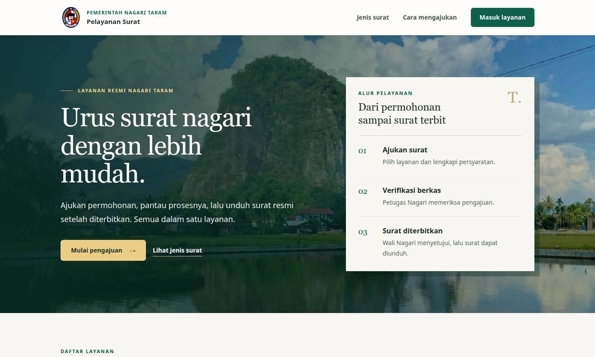
Halaman depan layanan pada layar komputer
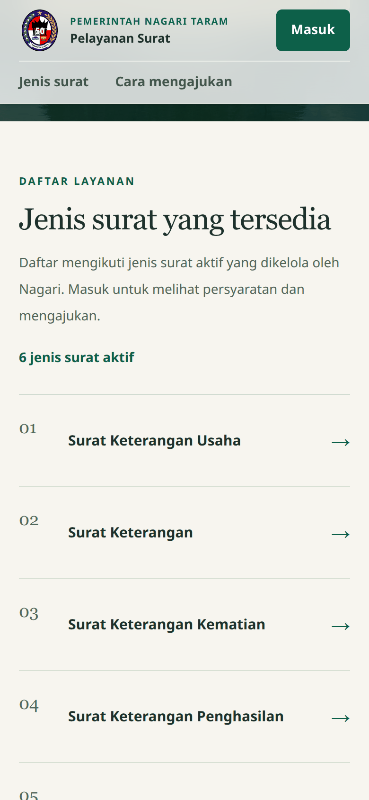
Daftar jenis surat yang dibuka
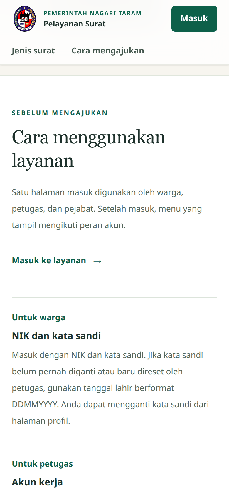
Penjelasan cara mengajukan
2.3 Masuk ke aplikasi
Semua pengguna memakai halaman masuk yang sama.
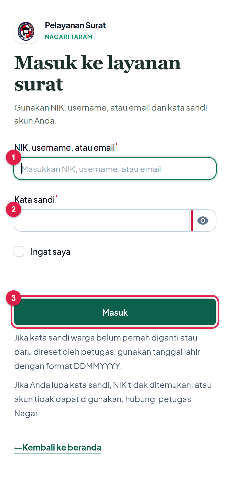
Halaman masuk. Isi kolom 1 dan 2, lalu tekan tombol 3
Pada kolom NIK, username, atau email (nomor 1): warga mengisi NIK 16 angka, sedangkan petugas, Wali, dan Admin mengisi username atau email akunnya.
Pada kolom Kata sandi (nomor 2): isi kata sandi. Tekan ikon mata untuk melihat sandi yang diketik.
Centang Ingat saya bila memakai perangkat pribadi supaya tidak perlu masuk lagi setiap kali membuka aplikasi.
Tekan Masuk (nomor 3).
Kata sandi awal warga
Warga yang belum pernah mengganti kata sandi memakai tanggal lahir dengan format DDMMYYYY (tanggal 2 angka, bulan 2 angka, tahun 4 angka, tanpa tanda baca).
Tanggal lahir
Kata sandi awal
27 Agustus 1958
27081958
9 Januari 1973
09011973
14 Juli 1978
14071978
Akun warga dibuat otomatis saat masuk pertama kali, asalkan NIK terdaftar di data penduduk Nagari dan tanggal lahirnya cocok.
Jika gagal masuk
Masalah
Penyebab dan solusinya
Pesan bahwa NIK/username atau kata sandi salah
Periksa kembali NIK (16 angka) dan kata sandi. Warga yang belum mengganti sandi memakai tanggal lahir DDMMYYYY.
NIK tidak ditemukan
NIK belum terdaftar di data penduduk Nagari. Datang ke kantor Nagari dengan membawa KTP/KK agar data Anda ditambahkan.
Lupa kata sandi
Minta petugas Nagari mereset kata sandi. Setelah direset, kata sandi kembali menjadi tanggal lahir (DDMMYYYY).
Pesan "Terlalu banyak percobaan masuk"
Kata sandi salah terlalu sering (lebih dari 5 kali). Tunggu sesuai waktu yang tertulis, lalu coba lagi dengan teliti.
Akun tidak dapat digunakan
Akun dinonaktifkan atau status penduduk bukan "Aktif". Hubungi petugas Nagari.
2.4 Mengenal tampilan setelah masuk
Setelah masuk, Anda berada di Dasbor Pelayanan. Dasbor menampilkan ringkasan pekerjaan dan pengajuan yang sesuai dengan peran Anda.
Di komputer
Menu berada di sisi kiri layar dan dikelompokkan menurut jenis pekerjaan. Angka berwarna di samping menu menunjukkan jumlah pekerjaan yang menunggu, misalnya pengajuan yang perlu diverifikasi. Tombol < di kiri atas menyembunyikan atau menampilkan menu.
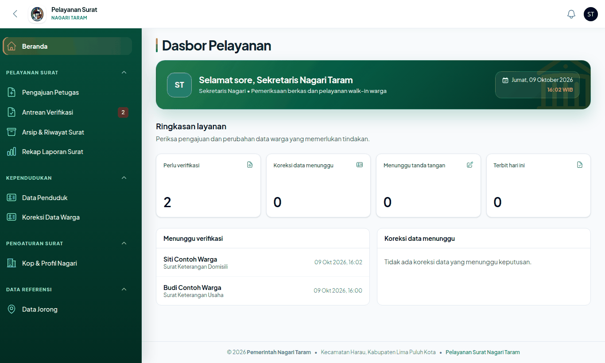
Dasbor petugas di layar komputer: menu di kiri dan ringkasan pekerjaan di kanan
Di HP
Menu utama berada di bagian bawah layar. Tekan Semua menu untuk melihat seluruh menu.
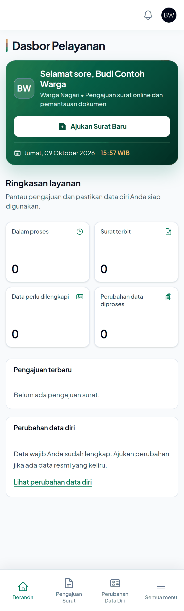
Dasbor warga di HP
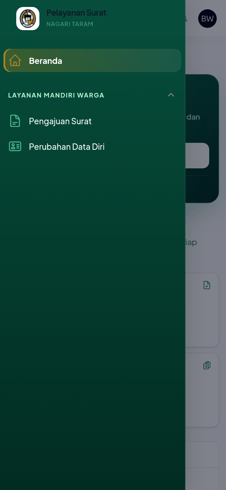
Isi "Semua menu"
2.5 Notifikasi, profil, dan keluar
Notifikasi
Ikon lonceng di kanan atas menampilkan pemberitahuan, misalnya pengajuan yang sudah diverifikasi, ditolak, atau diterbitkan. Angka di lonceng menunjukkan jumlah pemberitahuan yang belum dibaca.
Menu akun
Tekan lingkaran berisi inisial nama Anda di kanan atas. Pilih Profil Saya untuk melihat data akun dan mengganti kata sandi, atau Keluar untuk keluar dari aplikasi.
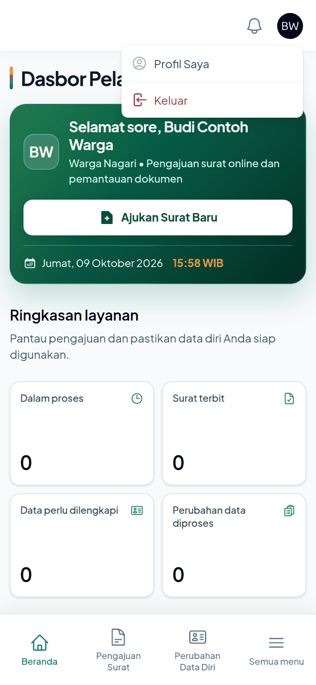
Menu akun: Profil Saya dan KeluarIsi notifikasi setelah surat terbit
Penting
Selalu tekan Keluar bila memakai komputer atau HP milik orang lain, misalnya komputer di kantor Nagari.
2.6 Mengganti kata sandi
Semua pengguna dapat mengganti kata sandinya sendiri. Kata sandi baru minimal 8 karakter. Aplikasi akan mengingatkan bila Anda masih memakai sandi awal, tetapi tidak memaksa.
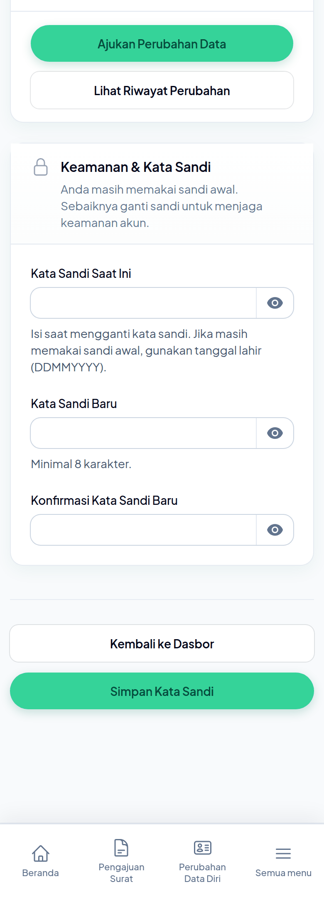
Bagian Keamanan & Kata Sandi di halaman profil
Buka menu akun (inisial nama di kanan atas), lalu pilih Profil Saya.
Gulir ke bagian Keamanan & Kata Sandi.
Isi Kata Sandi Saat Ini. Warga yang masih memakai sandi awal mengisi tanggal lahir DDMMYYYY.
Isi Kata Sandi Baru dan ulangi pada Konfirmasi Kata Sandi Baru.
Tekan Simpan Kata Sandi (warga) atau Simpan Perubahan (petugas).
Tips
Pakai kata sandi yang mudah Anda ingat tetapi sulit ditebak orang lain. Jangan memakai tanggal lahir, NIK, atau nomor HP sebagai kata sandi baru.
Bab 3
Panduan Warga
Cara mengajukan surat dari HP, memantau prosesnya, mengunduh surat yang sudah terbit, dan memperbaiki data diri.
3.1 Dasbor warga
Setelah masuk, warga melihat Dasbor Pelayanan berisi:
Tombol Ajukan Surat Baru untuk mulai mengajukan surat.
Ringkasan layanan: jumlah pengajuan Dalam proses, Surat terbit, Data perlu dilengkapi, dan Perubahan data diproses.
Pengajuan terbaru: daftar pengajuan terakhir beserta statusnya.
Perubahan data diri: keterangan apakah data wajib Anda sudah lengkap.
Dasbor warga sebelum ada pengajuan
Menu warga di bagian bawah layar:
Menu
Kegunaan
Beranda
Kembali ke dasbor.
Pengajuan Surat
Melihat semua pengajuan, statusnya, membuat pengajuan baru, dan mengunduh surat.
Perubahan Data Diri
Mengajukan perbaikan data diri dan memantau keputusannya.
Semua menu
Menampilkan seluruh menu.
3.2 Sebelum mengajukan: periksa data diri
Data diri Anda (nama, NIK, tempat dan tanggal lahir, alamat, agama, pekerjaan, dan lainnya) dicetak langsung pada surat. Karena itu, periksa dulu data diri Anda di Profil Saya.
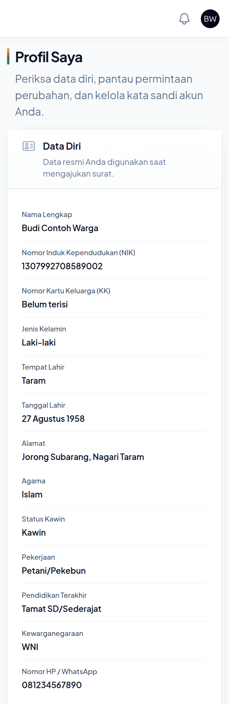
Data diri resmi di halaman Profil Saya
Data berikut wajib lengkap sebelum Anda dapat mengajukan surat: NIK, nama, jenis kelamin, tempat lahir, tanggal lahir, agama, pekerjaan, jorong, status perkawinan, dan pendidikan. Jika ada yang kosong, dasbor menampilkan angka pada Data perlu dilengkapi, dan langkah pertama pengajuan akan memberi tahu data mana yang harus dilengkapi.
Penting
Jika ada data yang salah atau kosong, ajukan perbaikan lewat Perubahan Data Diri (Subbab 3.10). Data baru dipakai pada surat setelah disetujui petugas Nagari.
3.3 Mengajukan surat: Langkah 1 — Periksa data diri
Pengajuan surat terdiri dari empat langkah: Periksa data diri, Pilih surat, Isi formulir, serta Berkas dan tinjauan. Bagian atas layar selalu menunjukkan langkah yang sedang Anda kerjakan.
Di dasbor, tekan Ajukan Surat Baru. Anda juga dapat membuka menu Pengajuan Surat lalu menekan Buat Pengajuan Surat Baru.
Periksa data resmi Anda yang tampil. Jika sudah benar, tekan Selanjutnya.
Jika ada yang salah, tekan tautan Ajukan perubahan data pada bagian Ada data yang perlu diubah?, lalu lanjutkan pengajuan setelah perubahan disetujui.
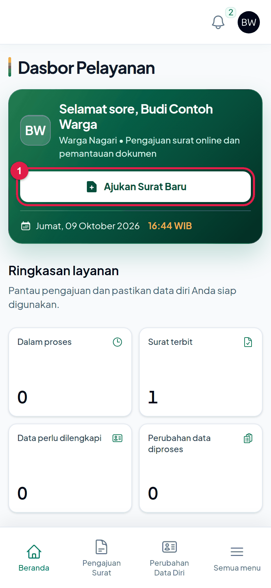
Tombol Ajukan Surat Baru di dasbor
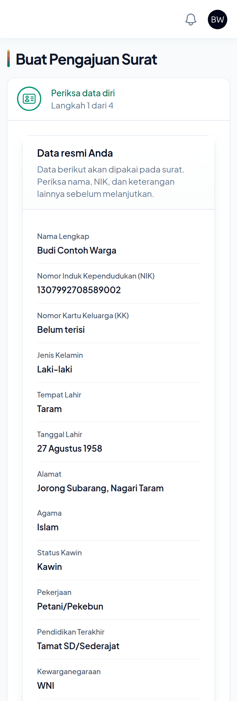
Langkah 1: data resmi pemohon
3.4 Mengajukan surat: Langkah 2 — Pilih surat
Pilih satu jenis surat yang sesuai keperluan Anda dengan menekan namanya.
Tekan Selanjutnya.
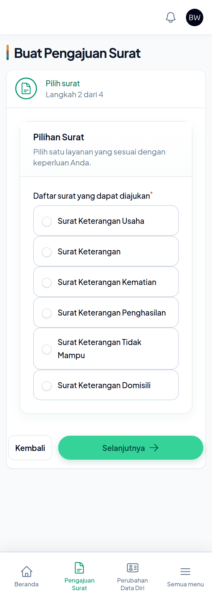
Daftar surat yang dapat diajukan
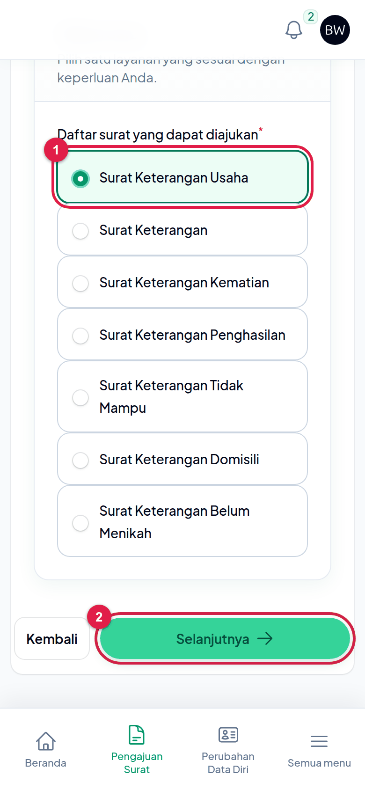
Surat Keterangan Usaha dipilih
Catatan
Jika sebuah jenis surat tampil pudar dan tidak dapat dipilih, berarti Anda masih mempunyai pengajuan jenis yang sama yang sedang diproses. Tunggu sampai pengajuan itu selesai, atau batalkan bila belum diperiksa (Subbab 3.7).
3.5 Mengajukan surat: Langkah 3 — Isi formulir
Langkah ini berisi pertanyaan khusus untuk surat yang Anda pilih. Misalnya, Surat Keterangan Usaha menanyakan nama usaha dan lokasi usaha. Pertanyaan bertanda bintang merah (*) wajib diisi.
Isi setiap pertanyaan dengan benar dan lengkap. Jawaban Anda akan dicetak pada surat.
Tekan Selanjutnya.
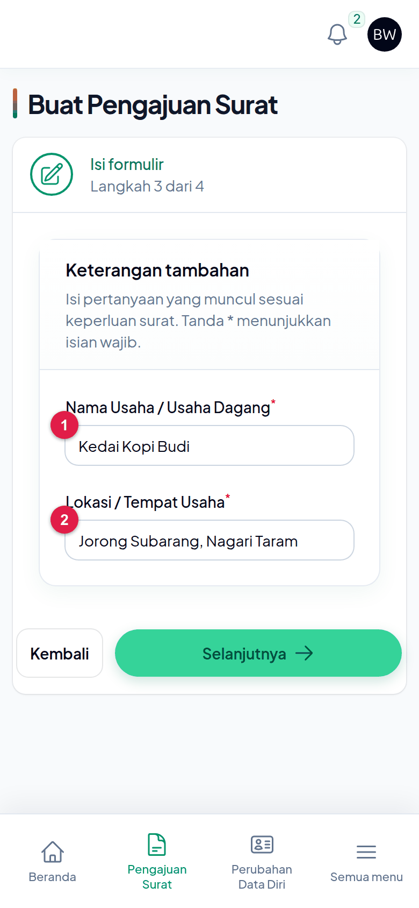
Pertanyaan khusus Surat Keterangan Usaha
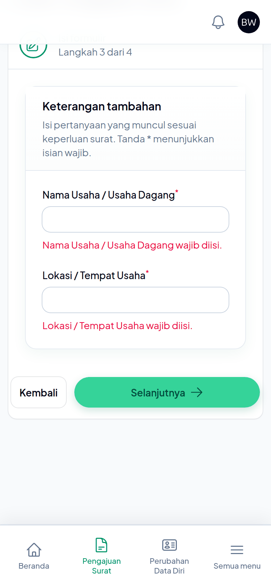
Pesan merah bila pertanyaan wajib belum diisi
Jenis isian yang mungkin Anda temui
Bentuk isian
Cara mengisi
Kotak teks
Ketik jawaban seperti biasa.
NIK
Ketik 16 angka tanpa spasi. Jika kurang atau lebih dari 16 angka, muncul pesan merah.
Tanggal
Tekan kolom lalu pilih tanggal dari kalender. Untuk tanggal lahir atau tanggal meninggal, tanggal setelah hari ini tidak dapat dipilih.
Pilihan
Tekan kolom, lalu pilih salah satu jawaban dari daftar.
Tabel beberapa baris
Tekan tombol + Tambah Baris … untuk setiap baris data (misalnya setiap anggota keluarga), lalu isi kolom-kolomnya. Tekan ikon tempat sampah untuk menghapus baris.
Kelompok yang boleh dilewati
Contohnya Data Saksi atau Data Ayah. Nyalakan sakelar Sertakan … bila Anda perlu mengisinya; pertanyaannya baru muncul setelah sakelar dinyalakan.
Pertanyaan bersyarat
Beberapa pertanyaan baru muncul setelah Anda memilih jawaban tertentu pada pertanyaan sebelumnya.
Catatan
Beberapa surat, misalnya Surat Keterangan Domisili, tidak mempunyai pertanyaan tambahan. Langkah ini hanya menampilkan keterangan dan Anda cukup menekan Selanjutnya.
3.6 Mengajukan surat: Langkah 4 — Berkas dan tinjauan
Langkah terakhir berisi berkas persyaratan dan ringkasan pengajuan.
Mengunggah berkas
Pada setiap berkas, tekan Jelajahi (di komputer Anda juga dapat menyeret berkas ke kotak itu).
Pilih foto atau berkas dari HP. Di HP Anda biasanya dapat memilih antara memotret langsung dengan kamera atau memilih dari galeri.
Tunggu sampai muncul tulisan Pengunggahan selesai dan gambar berkas tampil di kotak.
Ulangi untuk setiap berkas yang wajib.
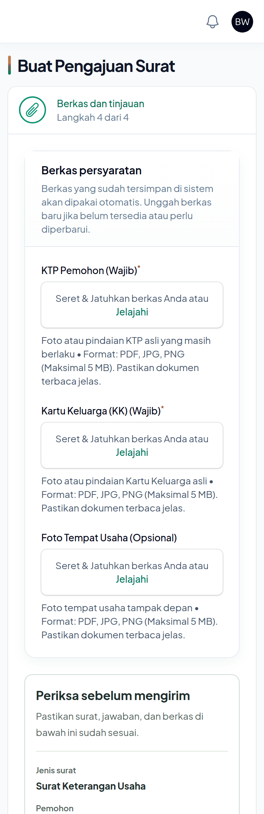
Daftar berkas persyaratan
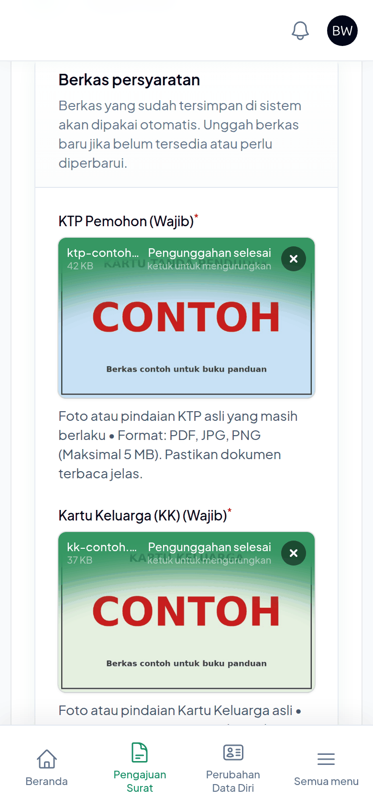
Berkas KTP dan KK yang sudah terunggah
Ketentuan berkas
Keterangan
Format
PDF, JPG, atau PNG
Ukuran maksimal
5 MB per berkas
Wajib / opsional
Berkas bertulisan (Wajib) harus diunggah. Berkas (Opsional) boleh dilewati.
Berkas yang sudah tersimpan
Berkas yang pernah Anda unggah pada pengajuan sebelumnya dipakai lagi otomatis dan bertulisan Sudah Tersimpan di Sistem. Unggah berkas baru hanya bila dokumennya berubah.
Menghapus berkas
Tekan tanda silang (×) pada berkas yang terunggah, lalu unggah berkas yang benar.
Tips
Foto berkas di tempat yang terang, tidak miring, dan pastikan semua tulisan terbaca jelas. Berkas yang buram adalah alasan penolakan yang paling sering.
Memeriksa dan mengirim
Gulir ke bawah sampai bagian Periksa sebelum mengirim. Bagian ini merangkum jenis surat, data pemohon, jawaban Anda, dan status setiap berkas.
Periksa semua isian. Jika ada yang salah, tekan Kembali untuk memperbaikinya.
Tekan Kirim pengajuan surat.
Muncul pesan Pengajuan surat terkirim dan pengajuan tampil di daftar dengan status Menunggu verifikasi petugas.
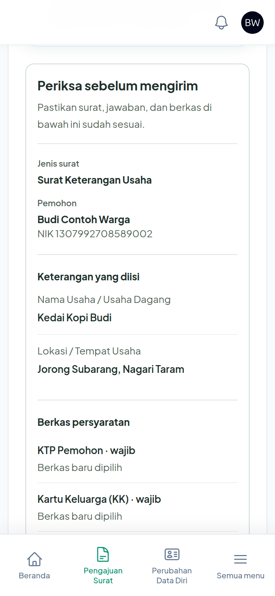
Ringkasan sebelum mengirim
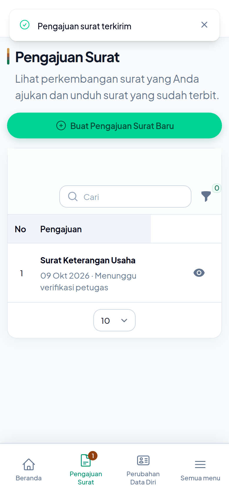
Pengajuan berhasil terkirim
3.7 Memantau dan membatalkan pengajuan
Buka menu Pengajuan Surat untuk melihat semua pengajuan Anda. Tekan ikon mata pada sebuah pengajuan untuk membuka rinciannya.
Halaman rincian menampilkan jenis surat, status, nomor surat resmi (setelah terbit), waktu pengajuan, tahap berikutnya, data diri, jawaban formulir, dan berkas yang dilampirkan.
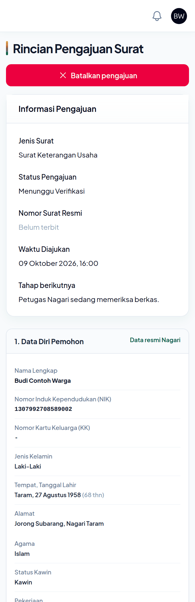
Rincian pengajuan yang sedang menunggu verifikasi
Membatalkan pengajuan
Selama status masih Menunggu verifikasi, Anda dapat membatalkan pengajuan, misalnya karena salah memilih surat.
Buka rincian pengajuan, lalu tekan Batalkan pengajuan.
Pada jendela konfirmasi, tekan Ya, batalkan. Tekan Batal bila tidak jadi.
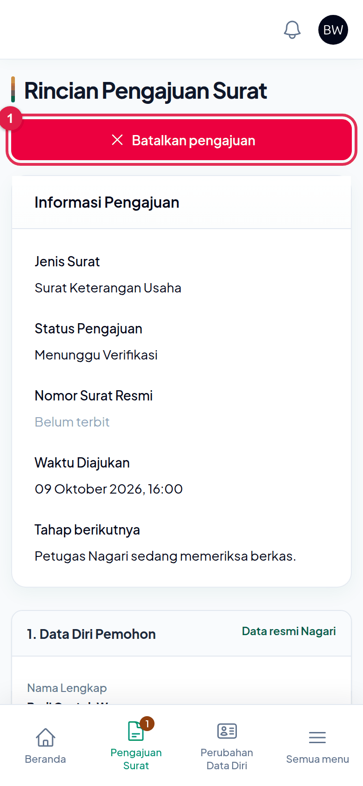
Tombol Batalkan pengajuan
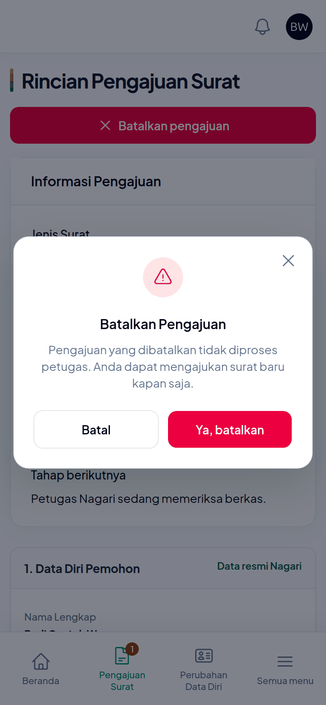
Konfirmasi pembatalan
Catatan
Pengajuan yang sudah diverifikasi petugas tidak dapat dibatalkan lagi oleh warga. Hubungi petugas Nagari bila memang perlu dihentikan.
3.8 Jika pengajuan ditolak: mengajukan ulang
Petugas menolak pengajuan bila ada data atau berkas yang tidak sesuai. Anda menerima notifikasi, dan status berubah menjadi Berkas ditolak. Alasan penolakan tertulis berwarna merah di halaman rincian.
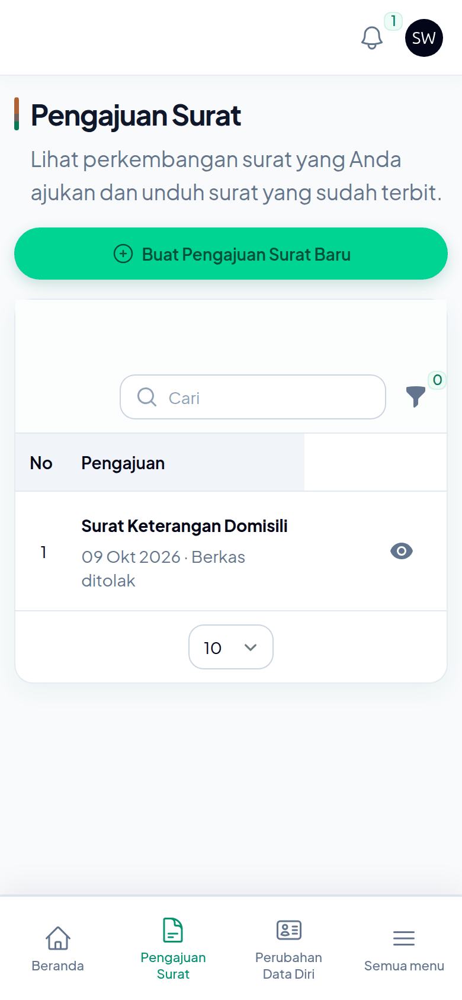
Pengajuan berstatus ditolak
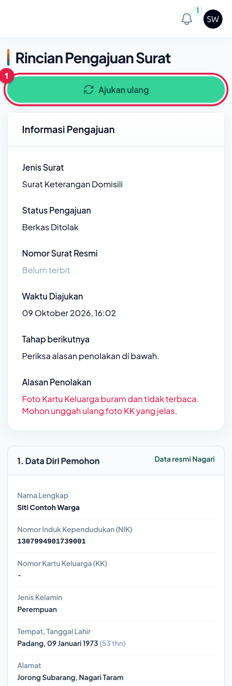
Alasan penolakan dan tombol Ajukan ulang
Buka rincian pengajuan yang ditolak dan baca Alasan Penolakan.
Siapkan perbaikannya, misalnya foto KK yang lebih jelas.
Tekan Ajukan ulang. Formulir pengajuan terbuka dengan jenis surat dan jawaban sebelumnya sudah terisi.
Lewati langkah 1–3 dengan Selanjutnya, perbaiki jawaban bila perlu.
Pada langkah 4, unggah ulang berkas yang diminta. Berkas yang ditandai petugas harus diunggah ulang tidak dipakai otomatis lagi, sedangkan berkas lain tetap tersimpan.
Tekan Kirim pengajuan surat.
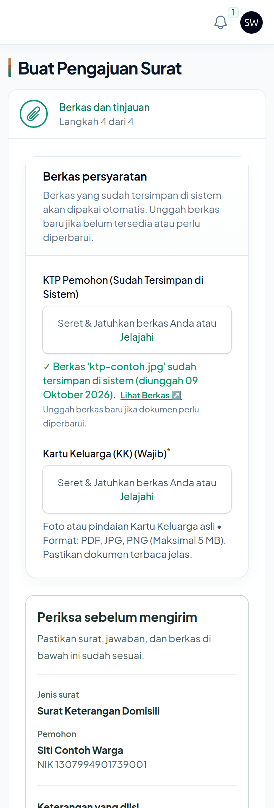
KTP sudah tersimpan; KK harus diunggah ulang
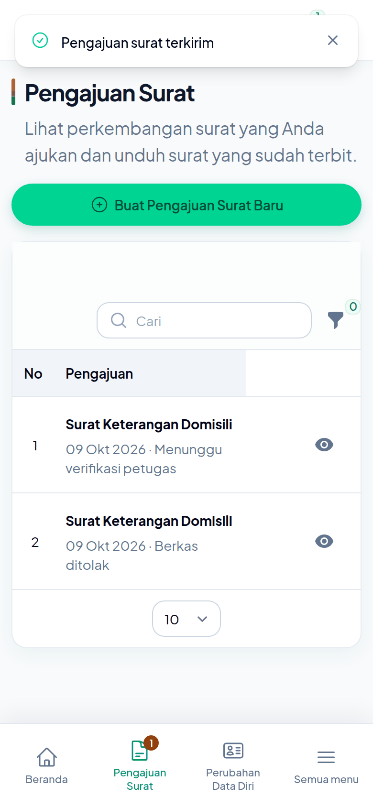
Pengajuan ulang terkirim
3.9 Mengunduh surat yang sudah terbit
Setelah Wali Nagari menandatangani, Anda menerima notifikasi surat terbit, dan angka Surat terbit di dasbor bertambah.
Buka menu Pengajuan Surat, lalu buka pengajuan berstatus Selesai diterbitkan.
Tekan Unduh surat. Berkas PDF tersimpan di HP Anda, biasanya di folder Download.
Buka PDF untuk melihat, mencetak, atau mengirimkannya.
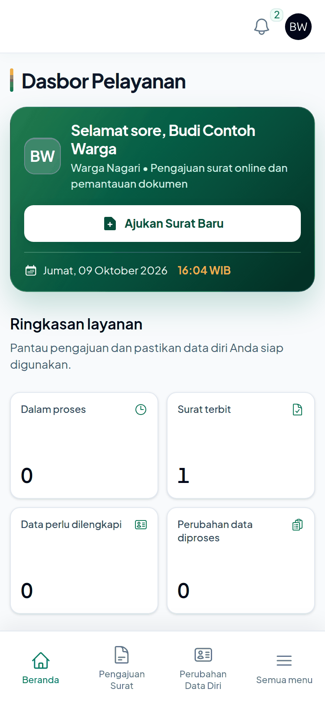
Dasbor setelah surat terbit
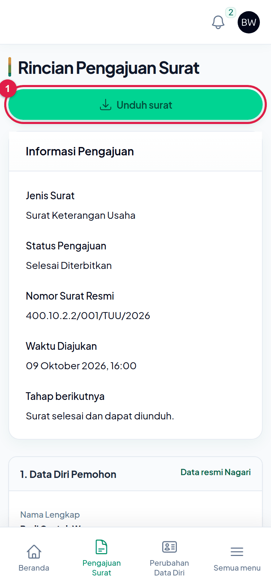
Tombol Unduh surat
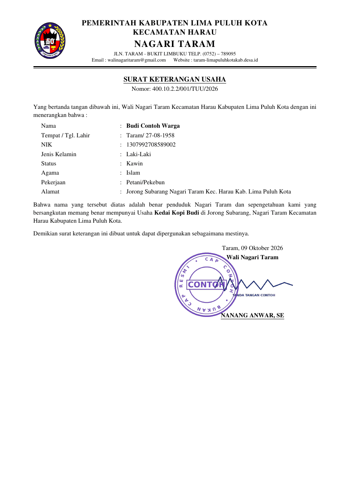
Contoh surat yang sudah terbit. Cap dan tanda tangan pada gambar ini adalah contoh
Catatan
Surat terbit memuat nomor resmi, tanggal surat, tanda tangan Wali Nagari, dan stempel Nagari. PDF ini adalah surat resmi; Anda dapat mencetaknya sendiri bila dibutuhkan dalam bentuk kertas.
3.10 Mengajukan perubahan data diri
Gunakan fitur ini bila data diri Anda salah atau belum lengkap, misalnya nomor KK belum terisi atau ejaan nama keliru. Data resmi baru berubah setelah petugas Nagari menyetujui permintaan Anda.
Buka menu Perubahan Data Diri, lalu tekan Ajukan Perubahan Data. Anda juga dapat menekan tombol yang sama di Profil Saya.
Formulir terisi dengan data resmi Anda. Ubah hanya bagian yang keliru atau kosong.
Tekan Kirim permintaan perubahan.
Permintaan tampil dengan status Menunggu petugas. Pantau keputusannya di menu yang sama.
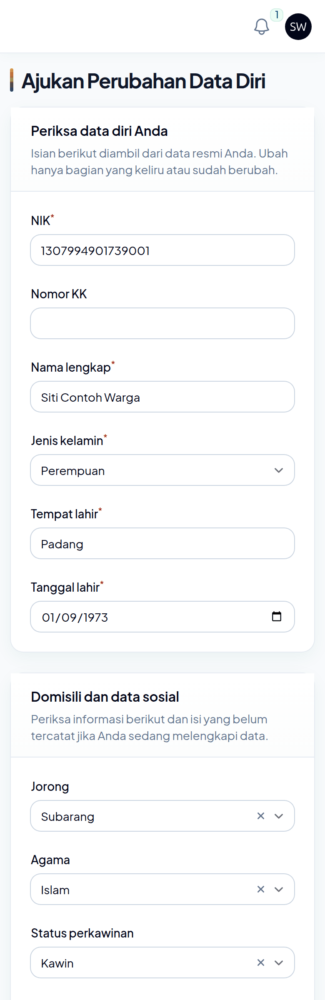
Formulir perubahan data diri
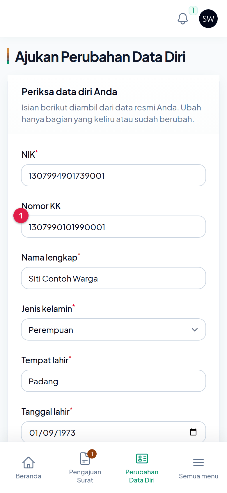
Contoh: nomor KK diisi
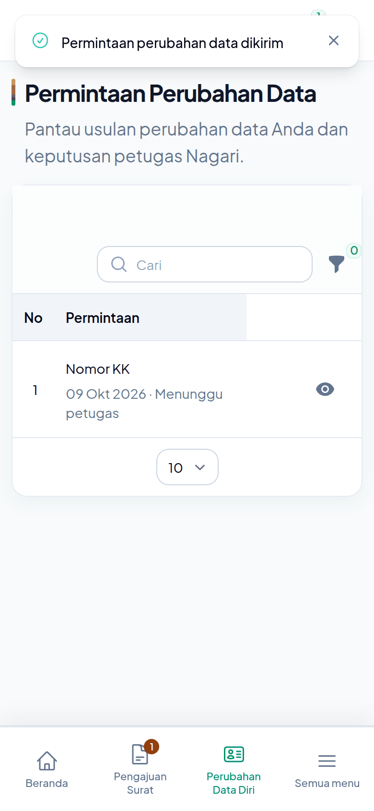
Permintaan perubahan menunggu pemeriksaan petugas
Penting
Permintaan yang tidak mengubah satu data pun akan ditolak sistem. Jika petugas menolak permintaan, alasannya tercantum pada permintaan tersebut. Perbaiki lalu ajukan lagi.
3.11 Pertanyaan yang sering diajukan warga
Pertanyaan
Jawaban
Berapa lama surat selesai?
Tergantung antrean pemeriksaan dan jadwal Wali Nagari. Pantau statusnya di menu Pengajuan Surat; Anda juga menerima notifikasi setiap kali status berubah.
Apakah saya harus datang ke kantor?
Tidak, bila semua berkas jelas dan data diri lengkap. Surat dapat diunduh langsung dari aplikasi.
Saya tidak punya HP. Bagaimana?
Datang ke kantor Nagari. Petugas dapat membuatkan pengajuan untuk Anda (pengajuan petugas).
Saya salah memilih surat.
Batalkan pengajuan selama masih Menunggu verifikasi, lalu buat pengajuan baru.
Kenapa jenis surat tidak bisa dipilih?
Anda masih mempunyai pengajuan jenis yang sama yang sedang diproses.
Data di surat salah.
Ajukan perubahan data diri. Untuk surat yang sudah terbit, hubungi petugas Nagari.
Berkas gagal diunggah.
Pastikan formatnya JPG, PNG, atau PDF dan ukurannya tidak lebih dari 5 MB. Coba foto ulang dengan resolusi lebih kecil.
Bab 4
Panduan Sekretaris dan Petugas Pelayanan
Memeriksa dan memverifikasi pengajuan, melayani warga di kantor, memeriksa koreksi data, dan mengelola data penduduk. Admin Nagari juga dapat mengerjakan semua tugas di bab ini.
4.1 Tugas dan dasbor petugas
Petugas pelayanan bertugas memastikan setiap pengajuan benar sebelum diteruskan ke Wali Nagari. Tugas harian petugas adalah:
Memeriksa pengajuan di Antrean Verifikasi, lalu memverifikasi atau menolaknya.
Membuat pengajuan untuk warga yang datang langsung ke kantor (Pengajuan Petugas).
Memeriksa permintaan perubahan data warga (Koreksi Data Warga).
Menambah dan memperbarui data penduduk (Data Penduduk).
Menjaga kop surat dan stempel Nagari tetap benar (Kop & Profil Nagari).
Dasbor menampilkan empat angka: Perlu verifikasi, Koreksi data menunggu, Menunggu tanda tangan, dan Terbit hari ini, beserta daftar pengajuan dan koreksi yang perlu segera ditangani.
Dasbor Sekretaris
Tips
Angka berwarna di samping menu Antrean Verifikasi menunjukkan jumlah pengajuan yang menunggu. Periksa menu ini setiap hari kerja.
4.2 Antrean verifikasi
Buka menu Antrean Verifikasi. Pengajuan yang paling lama menunggu tampil paling atas. Setiap baris menampilkan nama dan NIK pemohon, jenis surat, waktu pengajuan, dan jumlah lampiran.
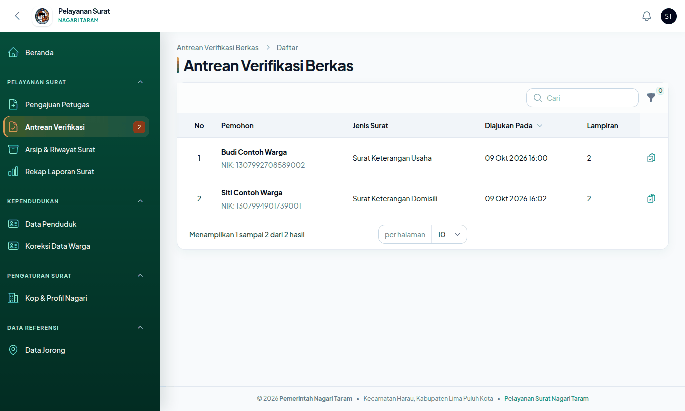
Antrean Verifikasi Berkas
Gunakan kotak Cari untuk mencari nama atau NIK pemohon, dan ikon corong untuk menyaring berdasarkan jenis surat.
Tekan ikon periksa di ujung kanan baris untuk membuka halaman verifikasi.
Ikon untuk membuka halaman verifikasi
Catatan
Pengajuan yang dikembalikan Wali Nagari tampil dengan tanda Dikembalikan Wali Nagari beserta alasannya. Periksa ulang pengajuan itu sesuai alasan dari Wali (Subbab 4.6).
4.3 Memeriksa pengajuan
Halaman verifikasi tersusun mengikuti urutan pemeriksaan:
Bagian
Yang diperiksa
1. Data Pemohon
Data resmi dari data penduduk Nagari: nama, NIK, KK, tempat dan tanggal lahir, alamat, agama, pekerjaan, dan lainnya.
2. Rincian Formulir
Jawaban warga atas pertanyaan khusus surat.
3. Berkas Persyaratan
Berkas yang diunggah warga. Berkas wajib bertanda WAJIB.
Nomor pada pratinjau
Nomor surat yang diusulkan otomatis untuk surat ini.
Pratinjau PDF
Contoh surat persis seperti yang akan dicetak, bertanda DRAFT / SIMULASI.
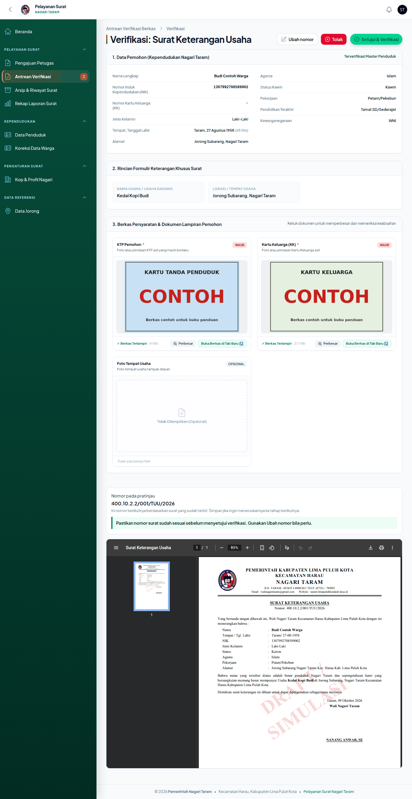
Halaman verifikasi lengkap: data pemohon, jawaban, berkas, nomor, dan pratinjau surat
Memeriksa berkas
Tekan gambar berkas atau tombol Perbesar untuk membukanya dalam ukuran besar. Gunakan tombol − dan + untuk memperkecil atau memperbesar, tombol putar untuk memutar gambar, dan tombol Buka Berkas di Tab Baru untuk membuka berkas PDF.
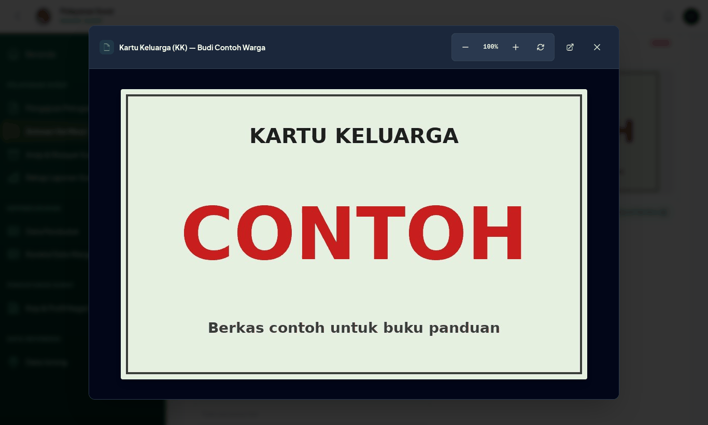
Berkas diperbesar untuk diperiksa
Daftar periksa sebelum memverifikasi
Nama dan NIK pada berkas sama dengan data pemohon.
Berkas wajib lengkap, terbaca jelas, dan masih berlaku.
Jawaban formulir masuk akal dan sesuai berkas.
Kalimat dan data pada pratinjau surat sudah benar.
Nomor surat sesuai buku register Nagari.
4.4 Nomor surat
Nomor surat diusulkan otomatis dengan melanjutkan nomor tertinggi yang sudah terbit. Biasanya Anda tidak perlu mengubahnya. Ubah hanya bila nomor harus disesuaikan dengan buku register manual.
Tekan Ubah nomor di kanan atas halaman verifikasi.
Ubah Nomor surat lengkap. Angka urut di dalam nomor otomatis disalin ke kolom Angka urut untuk kelanjutan otomatis.
Tekan Simpan dan perbarui pratinjau. Pratinjau surat ikut berganti.
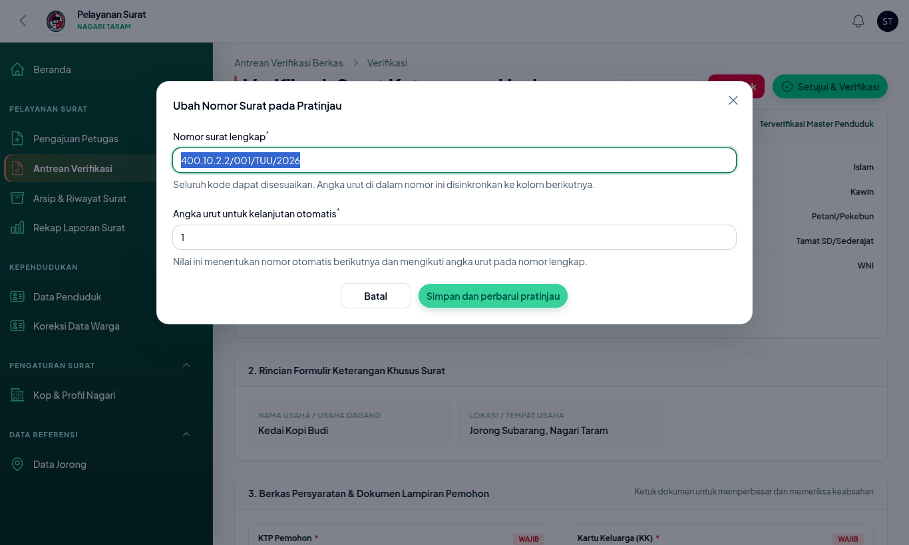
Jendela Ubah Nomor Surat
Catatan
Nomor masih dapat diubah sampai Wali Nagari menerbitkan surat. Setelah terbit, nomor dikunci permanen.
Periksa sekali lagi nomor surat pada jendela konfirmasi.
Tekan Ya, Setujui & Verifikasi. Pengajuan pindah ke Antrean Tanda Tangan Wali Nagari, dan warga menerima notifikasi.
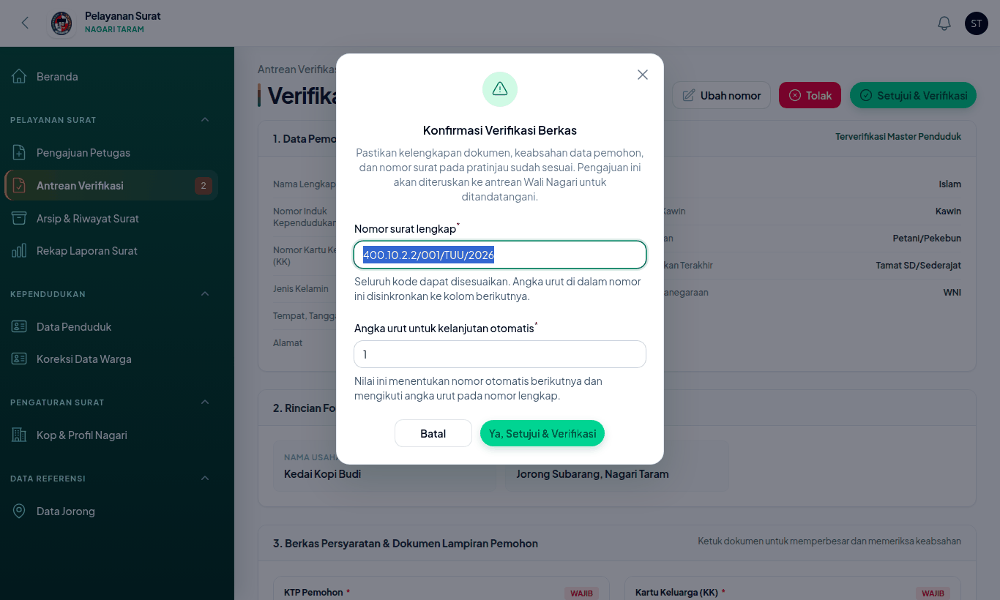
Konfirmasi verifikasi berkas
Penting
Verifikasi hanya dapat dilakukan bila stempel Nagari sudah diunggah dan Wali Nagari aktif sudah diatur. Jika belum, halaman menampilkan peringatan beserta tombol pintas Unggah stempel atau Atur Wali Nagari.
Menolak
Tekan Tolak.
Tulis Alasan Penolakan Berkas dengan jelas dan sopan, misalnya "Foto KK buram, mohon unggah foto yang jelas". Alasan ini dibaca warga.
Centang berkas yang harus diunggah ulang. Berkas yang dicentang tidak dipakai otomatis lagi saat warga mengajukan ulang.
Tekan Tolak Pengajuan Ini. Warga menerima notifikasi dan dapat mengajukan ulang.
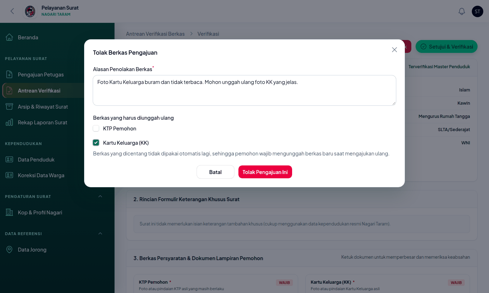
Jendela penolakan: alasan dan berkas yang harus diunggah ulang
Tips
Tulis alasan yang menyebutkan apa yang harus diperbaiki, bukan hanya "berkas tidak sesuai". Alasan yang jelas membuat warga tidak perlu bertanya ke kantor.
4.6 Pengajuan yang dikembalikan Wali Nagari
Wali Nagari dapat mengembalikan surat yang belum ditandatangani, misalnya karena ada data atau nomor yang perlu diperbaiki. Pengajuan itu kembali ke Antrean Verifikasi dengan tanda Dikembalikan Wali Nagari dan alasannya. Nomor usulan sebelumnya dilepas.
Buka pengajuan tersebut dan baca alasan dari Wali Nagari.
Jika yang perlu diperbaiki adalah nomor surat, sesuaikan dengan Ubah nomor, lalu verifikasi ulang.
Jika isian atau berkas warga yang salah, Tolak pengajuan dengan alasan yang jelas agar warga memperbaikinya.
4.7 Pengajuan petugas untuk warga yang datang ke kantor
Gunakan menu Pengajuan Petugas untuk warga yang datang langsung ke kantor Nagari, misalnya warga yang tidak mempunyai HP. Dokumen fisik diperiksa langsung, sehingga unggahan berkas tidak wajib. Pengajuan yang dibuat petugas langsung terverifikasi dan masuk ke Antrean Tanda Tangan Wali Nagari.
Buka Pengajuan Petugas, lalu tekan Buat Pengajuan untuk Warga.
Langkah 1 — Pilih warga pemohon. Tekan kolom pilihan, ketik NIK atau nama warga, lalu pilih dari daftar. Data resmi warga tampil untuk diperiksa.
Langkah 2 — Pilih surat. Pilih jenis surat yang diminta warga.
Langkah 3 — Isi formulir. Isi pertanyaan surat berdasarkan keterangan dan dokumen warga.
Langkah 4 — Berkas dan tinjauan. Unggah berkas bila perlu (opsional), periksa Nomor surat yang diusulkan, lalu periksa ringkasan.
Tekan Kirim pengajuan warga.
Mencari warga dengan NIK atau nama
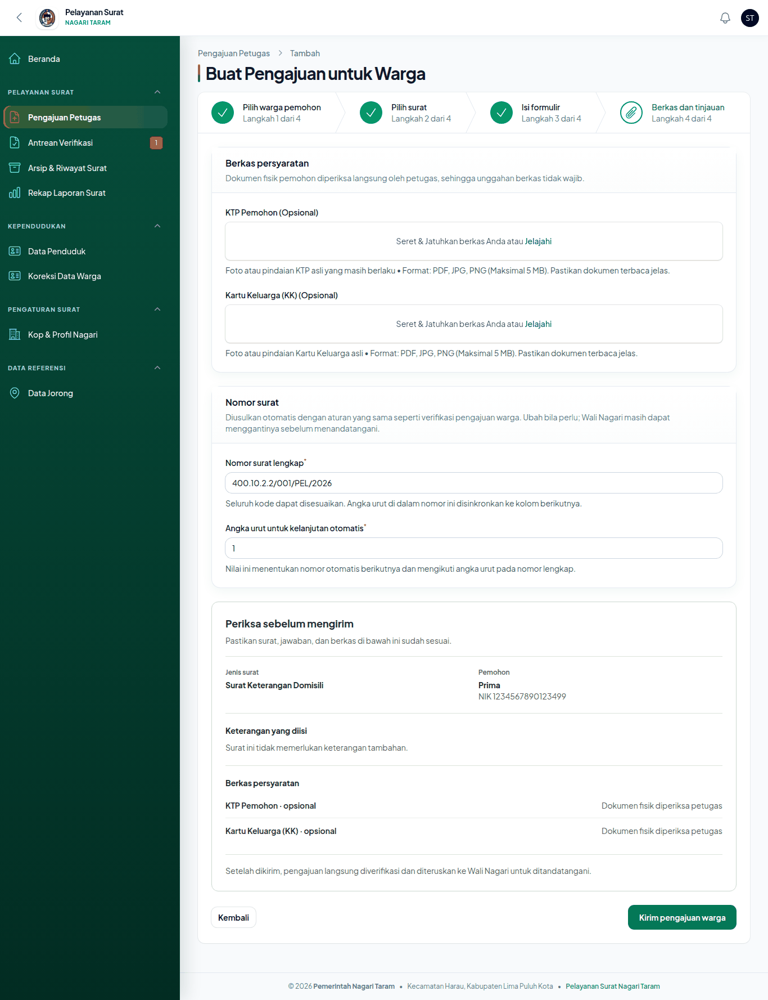
Langkah 4: berkas opsional, nomor surat, dan ringkasan
Catatan
Jika stempel atau Wali Nagari belum siap, pengajuan tetap tersimpan dan menunggu di Antrean Verifikasi. Nomor surat dipilih saat verifikasi.
Penting
Warga yang datanya belum lengkap, atau berstatus meninggal atau pindah, tidak dapat dipilih sebagai pemohon. Lengkapi atau perbaiki data penduduknya terlebih dahulu (Subbab 4.9).
4.8 Memeriksa koreksi data warga
Permintaan perubahan data dari warga masuk ke menu Koreksi Data Warga. Data resmi baru berubah setelah Anda menyetujuinya.
Buka Koreksi Data Warga, lalu buka permintaan yang berstatus Menunggu petugas.
Bandingkan Data saat diajukan dengan Usulan warga. Bila perlu, minta warga menunjukkan dokumen aslinya (KTP/KK).
Jika benar, tekan Setujui & Perbarui Data, lalu Konfirmasi. Data resmi langsung berubah.
Jika tidak sesuai, tekan Tolak Permintaan dan tulis alasannya.
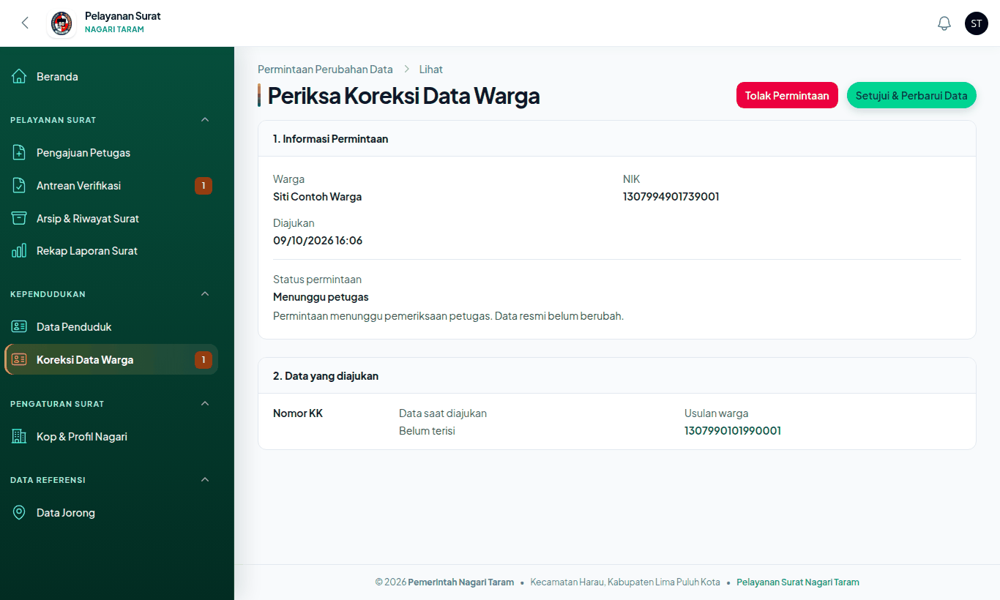
Rincian permintaan koreksi: data lama dan usulan warga
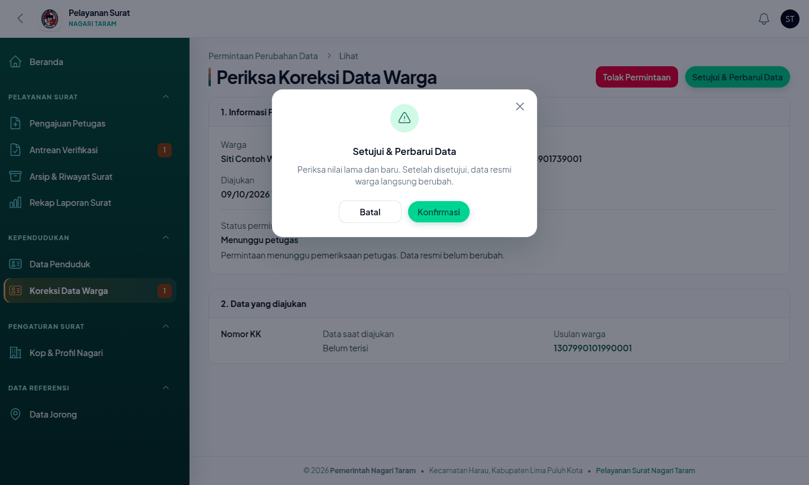
Konfirmasi persetujuan koreksi data
Catatan
Bila NIK atau tanggal lahir warga diubah, akun login warga ikut menyesuaikan: warga masuk dengan NIK baru. Jika warga masih memakai sandi awal, sandi awalnya mengikuti tanggal lahir baru.
4.9 Mengelola data penduduk
Menu Data Penduduk berisi seluruh penduduk Nagari. Data ini adalah sumber data diri pada setiap surat.
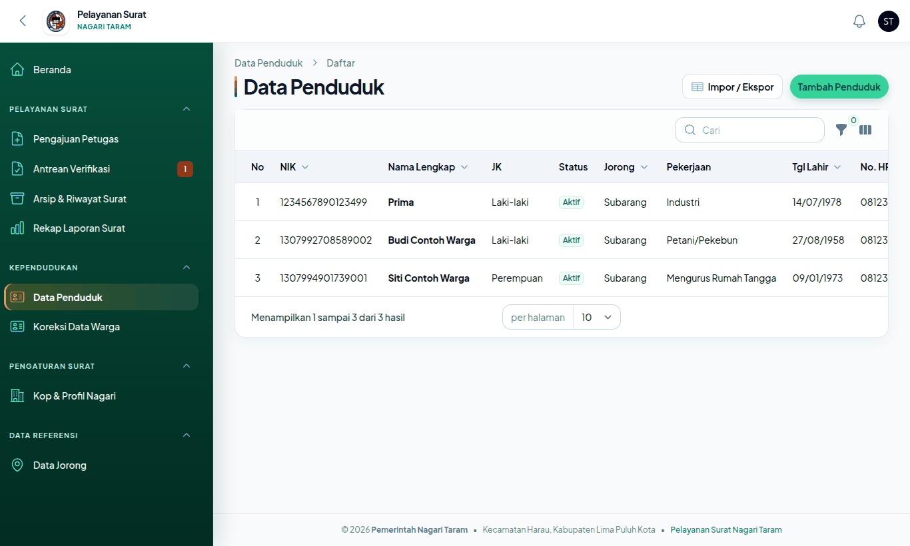
Daftar penduduk
Menambah penduduk
Tekan Tambah Penduduk.
Isi data wajib: NIK (16 angka), nama lengkap, jenis kelamin, tempat lahir, dan tanggal lahir.
Lengkapi jorong, agama, status perkawinan, pekerjaan, pendidikan, kewarganegaraan, dan nomor HP. Data ini dibutuhkan agar warga dapat mengajukan surat.
Pilih Status Penduduk: Aktif, Meninggal, atau Pindah.
Tekan Simpan. Akun login warga dibuat otomatis dengan sandi awal tanggal lahir.
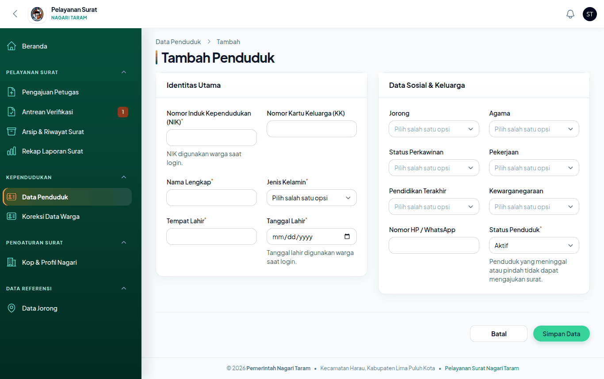
Formulir tambah penduduk
Mengubah data, status, dan sandi
Kebutuhan
Caranya
Memperbaiki data
Tekan ikon ubah (Ubah Data Penduduk) pada baris penduduk, perbaiki, lalu simpan.
Penduduk meninggal atau pindah
Ubah Status Penduduk menjadi Meninggal atau Pindah. Data tetap tersimpan, tetapi surat tidak dapat lagi diajukan atas namanya.
Warga lupa kata sandi
Tekan ikon Reset kata sandi warga, lalu Konfirmasi. Sandi kembali menjadi tanggal lahir (DDMMYYYY). Pastikan identitas warga sudah diperiksa sebelum mereset.
Mencari penduduk
Ketik nama atau NIK pada kotak Cari, atau saring menurut jorong, status, jenis kelamin, agama, status perkawinan, pekerjaan, dan pendidikan.
Menghapus penduduk
Hanya Admin. Penduduk yang sudah mempunyai riwayat surat, dokumen, atau permintaan perubahan tidak dapat dihapus; ubah statusnya saja.
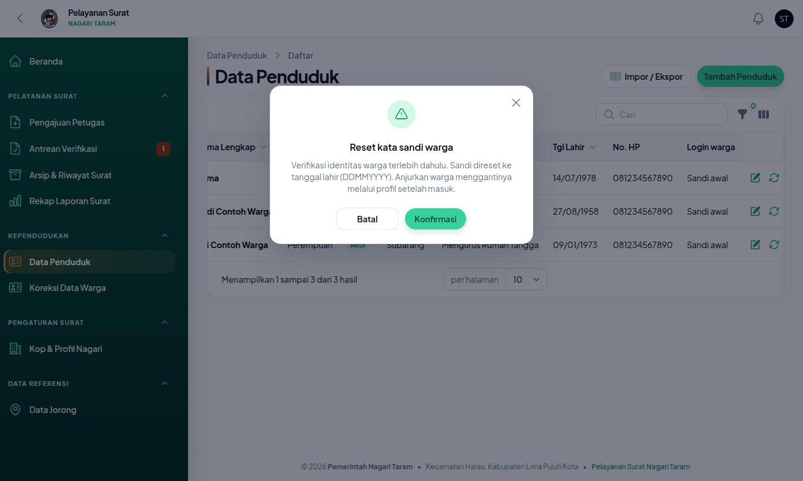
Konfirmasi reset kata sandi warga
Impor dan ekspor data penduduk
Tombol Impor / Ekspor berisi tiga pilihan:
Pilihan
Kegunaan
Unduh Template
Mengunduh berkas Excel kosong berisi kolom yang benar, daftar pilihan (dropdown), dan petunjuk pengisian.
Impor dari Excel
Menambah banyak penduduk sekaligus dari berkas .xlsx atau .csv (maksimal 15 MB). Setiap baris juga membuat akun login warga.
Ekspor Data Excel
Mengunduh seluruh data penduduk dalam format yang sama dengan template, sehingga dapat diimpor kembali ke sistem baru.
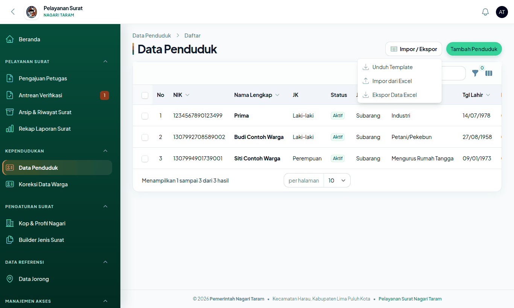
Menu Impor / Ekspor
Tekan Impor / Ekspor → Unduh Template, lalu isi sheet Data Warga. Jangan mengubah baris judul (baris 1).
Isi kolom wajib bertanda bintang: nama, nik, sex, tempatlahir, tanggallahir. Tanggal lahir ditulis tahun-bulan-tanggal, misalnya 1990-05-17.
Kolom pilihan (jenis kelamin, jorong, agama, status kawin, pekerjaan, pendidikan, kewarganegaraan, status penduduk) dipilih dari dropdown agar tidak salah ketik.
Simpan berkas sebagai .xlsx. Berkas .xls lama harus disimpan ulang sebagai .xlsx.
Tekan Impor / Ekspor → Impor dari Excel, pilih berkas, lalu tekan Mulai Impor. Jangan menutup halaman selama proses berjalan.
Baca Hasil Impor Warga. Baris yang bermasalah tercantum beserta nomor baris dan alasannya. Perbaiki baris itu di berkas, lalu impor ulang bagian itu saja.
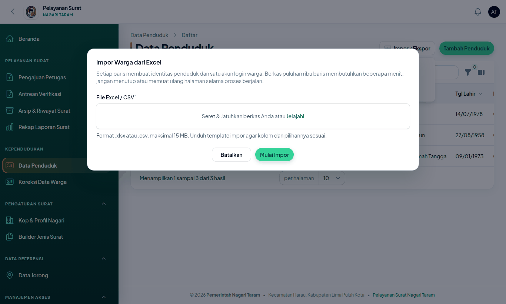
Jendela impor warga
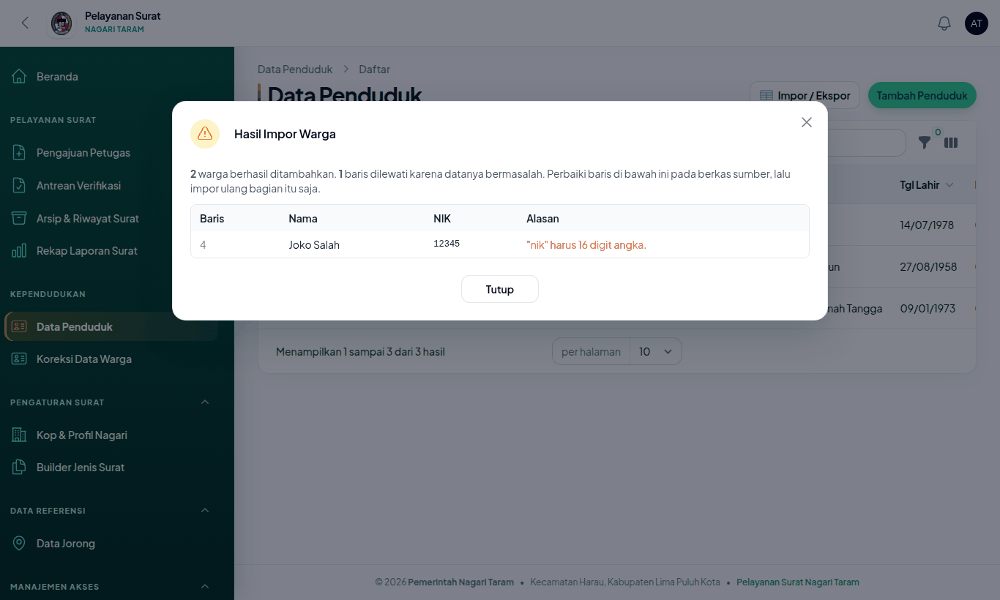
Hasil impor: 2 berhasil, 1 baris ditolak beserta alasannya
Penting
Impor hanya menambah warga baru. Baris dengan NIK yang sudah terdaftar akan ditolak. Untuk memperbaiki data warga yang sudah ada, gunakan tombol ubah di Data Penduduk.
4.10 Arsip, riwayat, dan rekap laporan
Arsip & Riwayat Surat
Menu Arsip & Riwayat Surat menampilkan semua pengajuan dengan semua status. Gunakan ikon corong untuk menyaring menurut status, jenis surat, jorong pemohon, dan rentang tanggal.
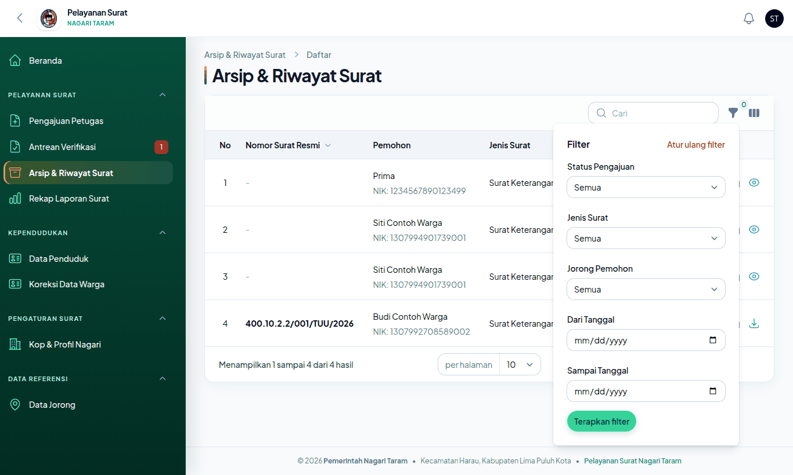
Arsip dan pilihan penyaring
Ikon mata (Lihat arsip) membuka rincian lengkap pengajuan.
Ikon unduh (Unduh surat) mengunduh PDF resmi surat yang sudah terbit.
Lihat draf membuka pratinjau surat yang belum terbit.
Rekap Laporan Surat
Menu Rekap Laporan Surat menampilkan jumlah surat per jenis layanan: total masuk, menunggu verifikasi, menunggu tanda tangan, diterbitkan, dan ditolak. Pilih Tahun dan Bulan, lalu tekan Unduh Rekap Spreadsheet (.xlsx) untuk laporan berkala.
Rekap dan statistik pelayanan surat
4.11 Kop surat, stempel, dan data jorong
Kop & Profil Nagari
Menu Kop & Profil Nagari mengatur kop surat yang tercetak di setiap surat: nama kabupaten, kecamatan, nagari, provinsi, alamat kantor, telepon, email, website, logo, dan stempel resmi.
Pengaturan kop surat dan stempel
Ubah teks kop atau kontak bila ada perubahan. Pratinjau kop di bagian atas menunjukkan hasilnya setelah disimpan.
Untuk mengganti stempel, hapus gambar lama lalu unggah gambar stempel baru berformat PNG berlatar transparan.
Tekan Simpan Perubahan.
Penting
Surat tidak dapat diverifikasi maupun diterbitkan sebelum stempel diunggah. Stempel hanya tercetak pada surat yang sudah terbit, tidak pada draf atau simulasi.
Data Jorong
Menu Data Jorong menampilkan daftar jorong di Nagari Taram dan jumlah penduduknya. Sekretaris dan Wali Nagari dapat melihatnya; menambah, mengubah, dan menghapus jorong dilakukan Admin (Subbab 6.4).
Bab 5
Panduan Wali Nagari
Meninjau, menandatangani, dan menerbitkan surat resmi Nagari secara online.
5.1 Tugas dan dasbor Wali Nagari
Wali Nagari adalah satu-satunya pengguna yang dapat menandatangani dan menerbitkan surat. Surat yang masuk ke Wali sudah diperiksa dan diverifikasi petugas.
Meninjau surat di Antrean Tanda Tangan.
Menandatangani dan menerbitkan surat.
Mengembalikan surat ke petugas bila ada yang perlu diperbaiki.
Memantau arsip dan rekap pelayanan surat.
Dasbor Wali Nagari
Penting
Sebelum dapat menerbitkan surat, gambar tanda tangan Wali Nagari harus sudah diunggah (Subbab 5.5), dan stempel Nagari harus sudah tersedia. Akun Wali juga harus tertaut ke data pejabat Wali Nagari yang aktif.
5.2 Antrean tanda tangan
Buka menu Antrean Tanda Tangan. Daftar ini berisi surat yang sudah diverifikasi petugas, lengkap dengan nama pemohon, jenis surat, nomor usulan, dan waktu siap ditandatangani.
Antrean tanda tangan. Tekan tombol bertanda 1 untuk meninjau
Tekan Tinjau, tanda tangani & terbitkan pada baris surat untuk membuka halaman peninjauan.
5.3 Meninjau dan menerbitkan surat
Halaman peninjauan menampilkan nomor surat dan pratinjau PDF surat persis seperti yang akan terbit.
Baca pratinjau surat: nama pemohon, data, kalimat keterangan, dan nomor surat.
Bila nomor perlu disesuaikan, tekan Ubah nomor, ubah nomor lengkap, lalu simpan. Pratinjau ikut berganti.
Bila semua benar, tekan Tanda tangani & terbitkan.
Pada jendela konfirmasi, tekan Ya, tanda tangani & terbitkan.
Surat terbit: nomor dikunci, PDF resmi dibuat dengan tanda tangan dan stempel, dan warga menerima notifikasi.
Konfirmasi penerbitan surat
Penting
Setelah diterbitkan, nomor surat tidak dapat diubah dan surat tidak dapat dibatalkan. Pastikan semua sudah benar sebelum menekan tombol konfirmasi.
Pada surat yang terbit, tanda tangan dicetak lebih dahulu, lalu stempel dibubuhkan di atas sepertiga kiri tanda tangan, seperti surat yang ditandatangani dan dicap langsung.
5.4 Mengembalikan surat ke petugas
Gunakan bila surat belum layak ditandatangani, misalnya ada data yang keliru atau nomor yang perlu diperiksa ulang.
Tekan Kembalikan ke petugas.
Tulis Alasan dikembalikan dengan jelas, misalnya "Nama usaha berbeda dengan foto papan nama".
Tekan Kembalikan. Surat kembali ke Antrean Verifikasi, dan nomor usulannya dilepas.
Jendela pengembalian surat ke petugas
Catatan
Petugas kemudian memperbaiki nomor lalu memverifikasi ulang, atau menolak pengajuan agar warga memperbaiki isian atau berkasnya.
5.5 Mengunggah tanda tangan Wali Nagari
Tanda tangan dapat diunggah sendiri oleh Wali Nagari melalui halaman profil, atau oleh Admin melalui menu Pejabat Nagari.
Buka menu akun di kanan atas, lalu pilih Profil Saya.
Pada bagian Tanda Tangan Wali Nagari, hapus gambar lama bila ada, lalu unggah gambar tanda tangan baru: PNG berlatar transparan (disarankan) atau JPG, maksimal 5 MB.
Tekan Simpan Perubahan.
Halaman profil Wali Nagari dengan bagian tanda tangan
Tips
Gunakan tanda tangan yang dipindai dari kertas putih, lalu hapus latarnya sehingga transparan. Tanda tangan dicetak selebar ±5 cm, jadi gambar yang terlalu kecil akan tampak buram.
5.6 Arsip, rekap, dan data penduduk
Arsip & Riwayat Surat: melihat dan mengunduh semua surat yang sudah terbit (cara pemakaiannya sama dengan Subbab 4.10).
Rekap Laporan Surat: melihat statistik pelayanan per jenis surat, per bulan atau per tahun, dan mengunduhnya sebagai Excel.
Data Penduduk dan Data Jorong: hanya untuk dilihat; perubahan data dilakukan petugas.
Arsip surat dari akun Wali Nagari
Bab 6
Panduan Admin Nagari
Admin Nagari mengerjakan semua tugas Sekretaris (Bab 4), ditambah pengaturan pejabat, jorong, log aktivitas, dan jenis surat (Bab 7).
6.1 Tugas Admin Nagari
Tugas
Menu
Dibahas di
Memverifikasi pengajuan, pengajuan petugas, koreksi data, data penduduk (termasuk impor/ekspor), arsip, rekap, kop dan stempel
Sama dengan Sekretaris
Bab 4
Membuat dan mengubah jenis surat
Builder Jenis Surat
Bab 7
Mengatur Wali Nagari dan Sekretaris beserta akun dan tanda tangannya
Pejabat Nagari
Subbab 6.2
Menambah, mengubah, dan menghapus jorong
Data Jorong
Subbab 6.4
Memeriksa jejak kegiatan pengguna
Log Aktivitas
Subbab 6.3
Menghapus data penduduk yang belum mempunyai riwayat
Data Penduduk
Subbab 4.9
Dasbor Admin Nagari dengan menu tambahan Builder Jenis Surat, Pejabat Nagari, dan Log Aktivitas
6.2 Pejabat Nagari dan akun petugas
Menu Pejabat Nagari berisi Wali Nagari dan Sekretaris Nagari beserta akun login dan tanda tangannya. Akun pejabat dibuat sekaligus saat data pejabat ditambahkan.
Daftar pejabat Nagari
Menambah pejabat
Tekan Tambah Pejabat.
Pilih Jabatan (Wali Nagari atau Sekretaris Nagari), isi nama lengkap beserta gelar, NIP (kosongkan bila bukan ASN), dan tahun mulai menjabat.
Biarkan Status Menjabat Aktif menyala. Hanya boleh ada satu pejabat aktif per jabatan; pejabat aktif sebelumnya otomatis dinonaktifkan.
Untuk Wali Nagari, unggah gambar tanda tangan.
Isi Akun Login Pejabat: username, email (opsional), dan kata sandi minimal 8 karakter. Berikan kepada pejabat yang bersangkutan dan minta ia menggantinya setelah masuk.
Tekan Simpan Data.
Formulir tambah pejabat dan akun loginnya
Penting
Saat Wali Nagari berganti, tambahkan Wali Nagari baru sebagai pejabat aktif beserta tanda tangannya. Surat yang sudah terbit tetap memakai nama dan tanda tangan Wali yang menerbitkannya.
Mengubah atau menonaktifkan pejabat
Tekan ikon ubah pada baris pejabat untuk mengganti data, kata sandi akun, atau tanda tangan. Matikan Status Menjabat Aktif dan isi tahun selesai bila masa jabatannya berakhir.
6.3 Log aktivitas
Menu Log Aktivitas mencatat semua kegiatan penting: verifikasi, penolakan, penerbitan, perubahan data penduduk, perubahan jenis surat, impor/ekspor, perubahan pejabat dan stempel, serta login. Catatan tidak dapat diubah atau dihapus.
Daftar log aktivitas
Saring menurut Jenis Aksi dan rentang tanggal untuk mencari kejadian tertentu.
Tekan Rincian untuk melihat siapa yang melakukan, kapan, dan data sebelum serta sesudah perubahan.
Rincian satu aktivitas
6.4 Data jorong
Jorong dipakai pada alamat penduduk dan alamat di surat. Admin dapat menambah, mengubah, dan menghapus jorong.
Buka Data Jorong, lalu tekan Tambah Jorong.
Isi nama jorong, lalu simpan.
Untuk mengubah, tekan ikon ubah pada baris jorong. Jorong yang masih mempunyai penduduk tidak dapat dihapus.
Menambah data jorong
Bab 7
Builder Jenis Surat
Panduan lengkap Admin Nagari untuk membuat dan mengubah jenis surat: pertanyaan untuk warga, isi surat, berkas persyaratan, dan pembukaan layanan.
7.1 Cara kerja Builder Jenis Surat
Builder Jenis Surat dipakai untuk membuat surat keterangan baru tanpa bantuan programmer. Satu jenis surat terdiri dari lima bagian, dan setiap bagian dikerjakan pada satu langkah:
Langkah
Isinya
Hasilnya
1. Nama & nomor
Nama surat, kode klasifikasi, kode unit, dan aturan penomoran
Judul dan nomor surat
2. Form warga
Pertanyaan tambahan yang harus dijawab warga
Formulir pada langkah 3 pengajuan warga
3. Isi surat
Kalimat surat dan letak data warga
Isi PDF surat
4. Berkas
Dokumen yang harus diunggah
Daftar berkas pada langkah 4 pengajuan warga
5. Aktifkan
Status layanan dan pemeriksaan akhir
Surat dapat atau belum dapat diajukan warga
Tiga hal yang perlu diketahui sejak awal
Data diri pemohon sudah otomatis. Nama, NIK, tempat dan tanggal lahir, jenis kelamin, agama, pekerjaan, alamat, dan data diri lain diambil dari data penduduk. Jangan membuat pertanyaan untuk data ini.
Jawaban warga masuk ke surat dengan sendirinya. Setiap pertanyaan yang Anda buat di langkah 2 langsung ditambahkan ke isi surat di langkah 3. Bila pertanyaan diubah atau dihapus, isi surat ikut menyesuaikan.
Anda tidak perlu mengenal kode atau variabel. Semua diatur dengan memilih dari daftar dan menulis kalimat biasa.
Tips
Tombol Panduan 5 langkah tersedia di setiap langkah. Tombol ini membuka ringkasan cara mengisi langkah tersebut.
Jendela Panduan 5 langkah di dalam aplikasi
7.2 Daftar jenis surat
Buka menu Builder Jenis Surat. Daftar menampilkan setiap jenis surat beserta kode klasifikasi, unit, status, jumlah pertanyaan (Jumlah Field), dan jumlah syarat dokumen.
Daftar jenis surat
Status
Artinya
Aktif (Portal)
Warga dapat mengajukan surat ini.
Draft (Uji Coba)
Rancangan. Hanya terlihat petugas; warga belum dapat mengajukan.
Nonaktif
Pengajuan baru ditutup. Pengajuan lama tetap dapat diproses.
Di ujung kanan setiap baris ada ikon Simulasi PDF (melihat contoh surat) dan Ubah Jenis Surat. Untuk membuat jenis surat baru, tekan Tambah Jenis Surat.
7.3 Langkah 1 — Nama dan nomor surat
Langkah 1: 1 nama surat, 2 kode klasifikasi, 3 kode unit
Isi Nama yang akan dilihat warga dengan nama resmi surat, misalnya Surat Keterangan Belum Menikah. Nama ini juga menjadi judul surat.
Periksa Kode klasifikasi sesuai buku register Nagari. Nilai awalnya 400.10.2.2.
Periksa Kode unit, yaitu unit yang menerbitkan surat. Nilai awalnya TUU.
Lihat kotak Pratinjau hasil format nomor surat resmi. Kotak ini menunjukkan bentuk nomor untuk surat pertama, misalnya 400.10.2.2/001/TUU/2026.
Pengaturan nomor lanjutan
Bagian ini tertutup karena nilai awalnya sudah sesuai untuk sebagian besar surat. Buka hanya bila buku register Nagari memakai aturan lain.
Pengaturan nomor lanjutan yang dibuka
Pengaturan
Pilihan
Penjelasan
Nomor urut dihitung untuk
Jenis surat ini saja · Semua jenis dengan kode klasifikasi yang sama · Seluruh jenis surat
Menentukan siapa yang berbagi urutan angka. Umumnya setiap jenis surat mempunyai urutannya sendiri.
Susunan nomor surat
Kode klasifikasi / nomor urut / kode unit / tahun · Saya atur susunan sendiri
Pilih susunan sendiri hanya bila format register berbeda. Susunan sendiri disusun dari Kode Klasifikasi, Nomor Urut, Kode Unit, dan Tahun.
Tampilan angka urut
001, 002, 003 · 1, 2, 3
Dengan atau tanpa angka nol di depan.
Mulai ulang nomor
Kembali ke 1 setiap awal tahun · Terus bertambah
Bila memilih mulai ulang setiap tahun, susunan nomor harus memuat Tahun.
Penting
Susunan nomor wajib memuat Nomor Urut. Jangan mengubah aturan penomoran jenis surat yang sudah dipakai tanpa persetujuan pimpinan, karena nomor berikutnya akan mengikuti aturan baru.
7.4 Langkah 2 — Pertanyaan untuk warga
Tambahkan hanya pertanyaan yang khusus untuk surat ini, misalnya nama usaha pada Surat Keterangan Usaha. Data diri pemohon tidak perlu ditanyakan. Bila surat tidak memerlukan pertanyaan tambahan, biarkan daftar kosong.
Menambah pertanyaan
Tekan Tambah pertanyaan.
Isi Pertanyaan yang dilihat warga. Tulis singkat dan jelas, misalnya Keperluan surat. Teks ini juga menjadi judul baris di surat.
Pilih Cara menjawab (lihat tabel di bawah).
Atur sakelar Wajib dijawab. Nyala berarti warga harus menjawab; mati berarti boleh dilewati.
Ulangi untuk pertanyaan berikutnya.
Pertanyaan dengan pilihan yang ditulis sendiri: 1 teks pertanyaan, 2 cara menjawab, 3 daftar pilihan
Pilihan "Cara menjawab"
Cara menjawab
Gunakan untuk
Aturan otomatis
Teks singkat
Nama, nama usaha, alamat singkat, keperluan
Maksimal 255 karakter
NIK (16 angka)
NIK orang lain: saksi, ayah, ibu, almarhum
Harus tepat 16 angka
Nomor HP
Nomor telepon
Hanya angka dan tanda +, 8–20 karakter
Email
Alamat email
Harus berbentuk alamat email
Teks panjang
Keterangan atau uraian beberapa kalimat
—
Teks panjang berformat
Uraian yang memerlukan huruf tebal, miring, atau daftar
—
Angka atau nominal
Jumlah, penghasilan, luas
Hanya angka; dapat dicetak sebagai Rupiah
Tanggal
Tanggal kegiatan atau tanggal yang akan datang
Dipilih dari kalender
Tanggal yang sudah lewat
Tanggal lahir, tanggal meninggal, tanggal mulai usaha
Tidak boleh melebihi hari ini
Pilih satu dari daftar yang saya tulis
Pilihan khusus, misalnya keperluan surat
Warga hanya dapat memilih dari daftar
Pilih dari data Nagari
Agama, pekerjaan, pendidikan, status perkawinan, hubungan keluarga, kewarganegaraan, suku, atau jorong
Pilihan selalu mengikuti data referensi Nagari
Daftar beberapa baris (tabel)
Data yang jumlahnya bisa lebih dari satu: anggota keluarga, ahli waris, saudara
Setiap baris diisi menurut kolom yang Anda tentukan
Unggah berkas tambahan
Lampiran khusus yang bukan syarat dokumen umum
Tidak dicetak di surat; untuk syarat seperti KTP/KK gunakan langkah 4
Pilihan jawaban
Untuk Pilih satu dari daftar yang saya tulis, ketik satu pilihan pada kotak Pilihan jawaban, lalu tekan Enter. Ulangi untuk setiap pilihan. Tekan tanda × pada sebuah pilihan untuk menghapusnya.
Untuk Pilih dari data Nagari, pilih datanya pada kotak Data yang dipakai sebagai pilihan, misalnya Pekerjaan.
Pertanyaan dari data Nagari yang hanya muncul untuk jawaban tertentu
7.5 Langkah 2 — Pengaturan lain, kelompok, dan tabel
Setiap pertanyaan mempunyai bagian Pengaturan lain yang tertutup. Tekan judulnya untuk membuka. Bagian ini terbuka sendiri bila salah satu pengaturannya sedang dipakai.
Kapan pertanyaan muncul
Pilih Hanya jika warga memilih jawaban tertentu, lalu tentukan Bergantung pada pertanyaan dan Jika jawabannya. Contoh pada gambar sebelumnya: pertanyaan Pekerjaan calon pasangan hanya muncul bila Keperluan surat dijawab Persyaratan menikah. Pertanyaan yang menjadi syarat harus berupa pilihan yang ditulis sendiri dan letaknya di atas.
Kelompok pertanyaan
Pilihan "Kelompokkan dengan pertanyaan lain?"
Hasilnya pada formulir warga
Tidak
Pertanyaan tampil sendiri (paling umum).
Ya, tampil bersama dalam satu kelompok
Beberapa pertanyaan berjudul sama tampil dalam satu kotak, misalnya Data Ayah.
Ya, dan warga boleh memilih tidak mengisi kelompok ini
Kelompok tampil dengan sakelar Sertakan …. Pertanyaannya baru muncul dan wajib diisi setelah warga menyalakan sakelar. Cocok untuk data saksi atau data orang tua yang tidak selalu ada.
Isi Nama kelompok yang sama, misalnya Data Saksi, pada setiap pertanyaan anggota kelompok.
Pertanyaan dalam kelompok "Data Saksi" yang boleh dilewati warga
Jangan cetak jawaban ini di surat
Nyalakan bila sebuah jawaban hanya perlu dilihat petugas saat memeriksa, misalnya nomor HP yang bisa dihubungi. Jawaban lain otomatis masuk ke isi surat.
Pertanyaan berbentuk tabel
Pilih cara menjawab Daftar beberapa baris (tabel).
Pada bagian Kolom yang diisi pada setiap baris, tekan Tambah kolom.
Isi Judul kolom dan pilih Cara mengisi kolom (teks singkat, NIK, angka, tanggal, tanggal yang sudah lewat, atau pilihan).
Atur Wajib diisi untuk setiap kolom, lalu ulangi untuk kolom berikutnya.
Pertanyaan tabel dengan kolom Nama dan Tanggal lahir
Mengurutkan dan menghapus pertanyaan
Seret ikon panah atas-bawah di kiri judul kartu untuk mengubah urutan pertanyaan. Tekan ikon tempat sampah merah untuk menghapus pertanyaan. Judul kartu yang tertutup meringkas pertanyaan, cara menjawab, dan status wajibnya.
Tips
Teks pertanyaan boleh diubah kapan saja. Judul baris di surat ikut berganti, kecuali judul itu sudah Anda ubah sendiri di langkah 3.
7.6 Langkah 3 — Isi surat
Langkah ini menampilkan surat seperti di atas kertas: kop (otomatis), judul dan nomor (otomatis), isi surat yang dapat diubah, dan bingkai tanda tangan (otomatis). Isi surat sudah tersusun dari:
Kalimat pembuka.
Kotak Rincian data berisi identitas pemohon.
Kotak rincian berisi jawaban dari langkah 2. Jawaban bersyarat atau dalam kelompok yang boleh dilewati masuk ke kotak bertuliskan tampil bila….
Kotak Tabel isian untuk setiap pertanyaan tabel.
Tulisan [ISI REDAKSI BERDASARKAN HASIL VERIFIKASI] yang harus diganti dengan kalimat keterangan surat.
Kalimat penutup.
Isi surat yang tersusun otomatis dari pertanyaan di langkah 2
Mengganti kalimat keterangan
Klik tulisan [ISI REDAKSI BERDASARKAN HASIL VERIFIKASI], lalu blok seluruh tulisan itu (klik tiga kali).
Ketik kalimat keterangan surat, misalnya "Nama tersebut di atas sepanjang pengetahuan kami belum pernah menikah dan masih berstatus belum kawin."
Ubah kalimat pembuka atau penutup bila perlu, seperti mengetik di aplikasi pengolah kata.
Penting
Jenis surat tidak dapat diaktifkan selama tulisan [ISI REDAKSI BERDASARKAN HASIL VERIFIKASI] masih ada.
7.7 Langkah 3 — Menyebut data warga di dalam kalimat
Data warga atau jawaban formulir dapat diletakkan di tengah kalimat. Saat surat dicetak, data itu diganti dengan isi sebenarnya.
Letakkan kursor di posisi data dalam kalimat.
Ketik dua kurung kurawal: {{. Daftar data muncul.
Ketik sebagian nama data untuk menyaring, misalnya Keper.
Pilih data dengan mengklik atau menekan Enter. Data tampil sebagai label berwarna di dalam kalimat.
Daftar data yang muncul setelah mengetik {{ lalu "Kepe"Kalimat yang memuat data "Keperluan surat"
Cara lain: tekan tombol Sisipkan data warga (ikon {+}) pada baris alat editor, lalu pilih datanya.
Baris alat editor: 1 Sisipkan data warga, 2 Sisipkan bagian khusus
Bentuk data yang tersedia
Data
Contoh hasil cetak
Nama pemohon, NIK pemohon, Nomor KK pemohon
BUDI CONTOH WARGA · 1307992708589002
Tempat/tgl. lahir pemohon
Taram/ 27-08-1958
Tanggal lahir pemohon (1 Januari 1990) / (01-01-1990)
27 Agustus 1958 · 27-08-1958
Alamat pemohon
Jorong Subarang Nagari Taram Kec. Harau Kab. Lima Puluh Kota
Jawaban tanggal / jawaban tanggal (angka)
01 Maret 2015 · 01-03-2015
Jawaban angka / jawaban angka (Rupiah)
1500000 · Rp. 1.500.000
Jawaban pilihan / (huruf awal: L/P)
Laki-Laki · L
Nomor surat, tanggal surat
Nomor dan tanggal saat surat terbit
Nama nagari, kecamatan, kabupaten, provinsi, Nama Wali Nagari
Dari Kop & Profil Nagari dan Pejabat Nagari
Catatan
Setelah data dipilih, editor menambahkan satu spasi. Hapus spasi itu bila setelahnya langsung diikuti tanda baca seperti titik atau koma.
7.8 Langkah 3 — Kotak rincian, tabel, dan bagian bersyarat
Kotak abu-abu di dalam isi surat disebut bagian khusus. Ada tiga jenis:
Bagian khusus
Bentuk di surat
Contoh
Rincian data
Baris "Tulisan : data" yang rapi sejajar
Identitas pemohon, data usaha, data saksi
Tabel isian
Tabel bergaris dengan kolom bernomor
Daftar tanggungan, ahli waris, saudara kandung
Bagian bersyarat
Paragraf yang hanya tercetak pada keadaan tertentu
Kalimat tambahan bila warga menyertakan data ayah
Mengubah kotak
Klik ikon pensil di kiri judul kotak.
Ubah isinya pada jendela yang muncul, lalu tekan Simpan.
Jendela pengubah kotak Rincian data
Isian pada jendela Rincian data
Kegunaan
Tulisan di kiri
Judul baris, misalnya Pekerjaan calon pasangan.
Data yang ditampilkan
Data yang dicetak di kanan tanda titik dua.
Gabungkan dengan data lain
Mencetak dua data dalam satu baris. Isi tanda penghubung (misalnya "/ ") dan data kedua. Contoh: tempat dan tanggal lahir menjadi Taram/ 01-01-1990.
Cetak tebal
Menebalkan data pada baris itu.
Tambah baris
Menambah baris baru di kotak yang sama. Seret untuk mengurutkan, ikon tempat sampah untuk menghapus.
Tampil hanya bila
Kotak hanya dicetak bila syaratnya terpenuhi, misalnya warga menyertakan Data Saksi. Kosongkan bila selalu tampil.
Pilihan Gabungkan dengan data lain dinyalakan
Menambah bagian khusus baru
Tekan tombol Sisipkan bagian khusus (ikon kotak-kotak) pada baris alat editor, lalu pilih Rincian data, Tabel isian, atau Bagian bersyarat. Bagian khusus disisipkan pada posisi kursor.
Panel Sisipkan bagian khusus
Tips
Biasanya Anda tidak perlu menambah bagian khusus sendiri, karena kotak untuk setiap pertanyaan sudah dibuat otomatis. Gunakan fitur ini hanya untuk tata letak khusus, misalnya kalimat tambahan yang hanya tercetak untuk keperluan tertentu.
Penting
Menghapus kotak jawaban dengan ikon tempat sampah membuat jawaban itu tidak tercetak. Aplikasi akan mengingatkan di langkah 5. Bila memang tidak perlu dicetak, nyalakan Jangan cetak jawaban ini di surat pada pertanyaannya di langkah 2.
7.9 Langkah 4 — Berkas persyaratan
Tentukan dokumen yang harus diunggah warga. Biarkan daftar kosong bila surat tidak memerlukan unggahan.
Tekan Tambah berkas persyaratan.
Isi Nama berkas yang diminta, misalnya KTP Pemohon. Nama berkas yang sudah pernah dipakai dapat dipilih dari daftar.
Isi Petunjuk untuk warga bila nama berkas belum cukup jelas.
Atur sakelar Wajib diunggah.
Tentukan Kapan berkas ini diminta: pada setiap pengajuan, jika warga mengisi kelompok pertanyaan tertentu, atau jika warga memilih jawaban tertentu.
Berkas KTP (selalu) dan Surat Pengantar Jorong (hanya untuk keperluan menikah)
Catatan
Berkas yang sama tidak boleh dicantumkan dua kali. Berkas yang pernah diunggah warga dipakai lagi otomatis pada pengajuan berikutnya.
7.10 Langkah 5 — Mengaktifkan dan menyimpan
Pilih status layanan pada Siapa yang dapat mengajukan surat ini?:
Pilihan
Kapan dipakai
Belum dibuka; simpan sebagai rancangan
Surat masih disiapkan atau menunggu persetujuan redaksi.
Warga dapat mengajukan
Surat sudah diperiksa dan siap dipakai.
Tutup pengajuan baru
Surat tidak lagi dilayani. Pengajuan yang sudah masuk tetap dapat diselesaikan.
Kotak Periksa sebelum menyimpan memeriksa seluruh langkah. Bila semuanya benar, tampil tulisan hijau Pengaturan lengkap.
Langkah 5: status layanan dan pemeriksaan yang sudah lengkap
Bila ada yang belum benar, tampil daftar masalah berwarna kuning. Klik setiap masalah untuk langsung membuka langkah yang perlu diperbaiki.
Contoh pemeriksaan yang masih menemukan masalah
Pesan yang mungkin muncul
Cara memperbaiki
Ganti tulisan [ISI REDAKSI …] dengan kalimat keterangan surat
Langkah 3: ganti tulisan penanda dengan kalimat surat.
Nama surat / kode klasifikasi / kode unit wajib diisi
Langkah 1: lengkapi isian tersebut.
Pertanyaan "…" belum memiliki daftar pilihan jawaban
Langkah 2: isi pilihan jawaban atau pilih data Nagari.
Tabel "…" belum memiliki kolom
Langkah 2: tambahkan minimal satu kolom.
Jawaban "…" belum ada di isi surat
Langkah 3: sisipkan datanya, atau nyalakan "Jangan cetak jawaban ini" di langkah 2.
Jawaban "…" hanya ada pada kondisi tertentu
Letakkan data itu di kotak yang tampil dengan syarat yang sama.
Isi surat memuat data dari pertanyaan yang sudah dihapus
Langkah 3: hapus data itu dari kalimat.
Pilihan "…" ditulis lebih dari sekali / ada pilihan kosong
Langkah 2: rapikan daftar pilihan jawaban.
Berkas "…" tercantum lebih dari sekali
Langkah 4: hapus berkas yang ganda.
Tekan Simpan jenis surat. Setelah tersimpan, halaman berpindah ke halaman ubah jenis surat.
Catatan
Rancangan dapat disimpan kapan saja walaupun belum lengkap. Pemeriksaan kesiapan hanya mencegah surat dibuka untuk warga sebelum benar.
7.11 Memeriksa hasil dengan simulasi PDF
Setelah menyimpan, tekan Simulasi Cetak PDF di bagian atas halaman ubah, atau ikon Simulasi PDF di daftar jenis surat. Simulasi memakai pemohon dan jawaban contoh, bertanda DRAFT / SIMULASI, dan tidak memuat tanda tangan maupun stempel.
Simulasi PDF Surat Keterangan Belum Menikah
Periksa ejaan, tanda baca, dan susunan kalimat.
Periksa bahwa setiap jawaban tercetak pada tempat yang benar.
Bagian bersyarat hanya tercetak bila syaratnya terpenuhi. Pada contoh di atas, Pekerjaan calon pasangan tidak tercetak karena jawaban contoh untuk keperluan adalah Melamar pekerjaan.
Tips
Simulasi memakai data yang sudah disimpan. Simpan perubahan terlebih dahulu sebelum membuka simulasi.
Buka Builder Jenis Surat, tekan ikon ubah pada jenis surat, lalu pilih langkah yang ingin diubah pada bagian atas.
Tekan Simpan perubahan setelah selesai.
Perubahan pertanyaan, syarat, dan isi surat hanya berlaku untuk pengajuan baru. Pengajuan yang sudah masuk tetap memakai pengaturan saat diajukan.
Untuk berhenti melayani sebuah surat, pilih Tutup pengajuan baru di langkah 5, bukan menghapusnya.
Hapus hanya untuk jenis surat yang tidak pernah dipakai. Penghapusan meminta alasan dan tercatat di log aktivitas.
7.13 Contoh lengkap dan kesalahan yang sering terjadi
Contoh: Surat Keterangan Belum Menikah
Langkah
Yang diisi pada contoh di bab ini
1
Nama: Surat Keterangan Belum Menikah; kode 400.10.2.2 dan TUU (nilai awal).
2
Keperluan surat (pilihan: Melamar pekerjaan, Persyaratan menikah, Lainnya) · Pekerjaan calon pasangan (data Nagari Pekerjaan, hanya bila keperluan = Persyaratan menikah) · Nama saksi dan NIK saksi (kelompok Data Saksi, boleh dilewati) · Daftar saudara kandung (tabel: Nama, Tanggal lahir).
3
Tulisan penanda diganti kalimat keterangan yang menyebut data Keperluan surat.
4
KTP Pemohon (selalu) · Surat Pengantar Jorong (hanya bila keperluan = Persyaratan menikah).
5
Warga dapat mengajukan → Simpan → periksa simulasi PDF.
Kesalahan yang sering terjadi
Kesalahan
Akibat
Yang benar
Membuat pertanyaan "Nama" atau "NIK" pemohon
Warga mengetik ulang data yang sudah ada dan bisa berbeda dengan data resmi
Data diri pemohon sudah otomatis; jangan ditanyakan.
Memilih "Teks singkat" untuk NIK atau tanggal lahir
Isian tidak diperiksa sehingga mudah salah ketik
Pilih "NIK (16 angka)" atau "Tanggal yang sudah lewat".
Menulis pilihan agama/pekerjaan sendiri
Pilihan tidak sama dengan data Nagari
Pilih "Pilih dari data Nagari".
Mengaktifkan surat tanpa memeriksa simulasi
Kesalahan baru diketahui setelah surat terbit
Selalu periksa simulasi PDF sebelum membuka layanan.
Menghapus jenis surat yang tidak dipakai lagi
Riwayat sulit ditelusuri
Pilih "Tutup pengajuan baru".
Bab 8
Lampiran
Ringkasan hak akses, pemecahan masalah, dan daftar periksa harian.
8.1 Ringkasan siapa dapat melakukan apa
Kegiatan
Warga
Sekretaris
Wali Nagari
Admin
Mengajukan surat untuk diri sendiri
✔
—
—
—
Membuat pengajuan untuk warga di kantor
—
✔
—
✔
Memverifikasi atau menolak pengajuan
—
✔
—
✔
Menandatangani dan menerbitkan surat
—
—
✔
—
Mengembalikan surat ke petugas
—
—
✔
—
Mengubah nomor surat sebelum terbit
—
✔
✔
✔
Mengunduh surat terbit
Milik sendiri
✔
✔
✔
Mengajukan perubahan data diri
✔
—
—
—
Memeriksa koreksi data warga
—
✔
—
✔
Menambah dan mengubah data penduduk, impor/ekspor
—
✔
—
✔
Menghapus data penduduk
—
—
—
✔
Mengatur kop surat dan stempel
—
✔
—
✔
Menambah dan mengubah jorong
—
—
—
✔
Membuat dan mengubah jenis surat
—
—
—
✔
Mengatur pejabat dan akun petugas
—
—
—
✔
Melihat log aktivitas
—
—
—
✔
Mengganti kata sandi sendiri
✔
✔
✔
✔
8.2 Pemecahan masalah
Masalah
Penyebab
Solusi
Tombol tidak bereaksi saat pertama kali diklik
Halaman belum selesai dimuat
Tunggu sebentar lalu klik sekali lagi. Jangan mengklik berkali-kali dengan cepat.
Perubahan tidak tampil
Halaman masih menampilkan data lama
Muat ulang halaman (tarik layar ke bawah di HP atau tekan F5 di komputer).
Tidak dapat memverifikasi
Stempel atau Wali Nagari aktif belum tersedia
Unggah stempel di Kop & Profil Nagari; atur Wali Nagari di Pejabat Nagari.
Tidak dapat menerbitkan
Tanda tangan Wali belum diunggah
Unggah tanda tangan di Profil Saya (Wali) atau Pejabat Nagari (Admin).
Warga tidak muncul saat membuat pengajuan petugas
Data warga belum lengkap atau status bukan Aktif
Lengkapi data penduduk atau perbaiki statusnya.
Jenis surat tidak tampil bagi warga
Status masih rancangan atau ditutup
Admin mengubah status di Builder langkah 5.
Impor penduduk menolak banyak baris
Kolom wajib kosong, format tanggal salah, atau NIK sudah terdaftar
Baca alasan pada Hasil Impor, perbaiki berkas, lalu impor ulang baris yang gagal.
Berkas gagal diunggah
Format atau ukuran tidak sesuai
Gunakan JPG, PNG, atau PDF, maksimal 5 MB.
Pesan "Terlalu banyak percobaan masuk"
Kata sandi salah lebih dari 5 kali
Tunggu beberapa saat, lalu coba lagi dengan teliti.
8.3 Daftar periksa harian petugas
Waktu
Kegiatan
Peran
Pagi
Periksa Antrean Verifikasi dan Koreksi Data Warga; selesaikan yang paling lama menunggu.
Sekretaris / Admin
Pagi dan siang
Tinjau dan terbitkan surat di Antrean Tanda Tangan.
Wali Nagari
Saat ada warga datang
Buat pengajuan petugas; periksa dokumen fisik langsung.
Sekretaris / Admin
Akhir bulan
Unduh Rekap Laporan Surat untuk laporan bulanan.
Sekretaris / Admin
Saat ada perubahan
Perbarui kop, stempel, pejabat, atau jenis surat.
Admin
Ingat
Jaga kerahasiaan data warga. Jangan membagikan berkas KTP, KK, atau surat warga kepada pihak lain, dan jangan memberikan kata sandi akun kepada siapa pun.
![Lambang Kabupaten Lima Puluh Kota]()